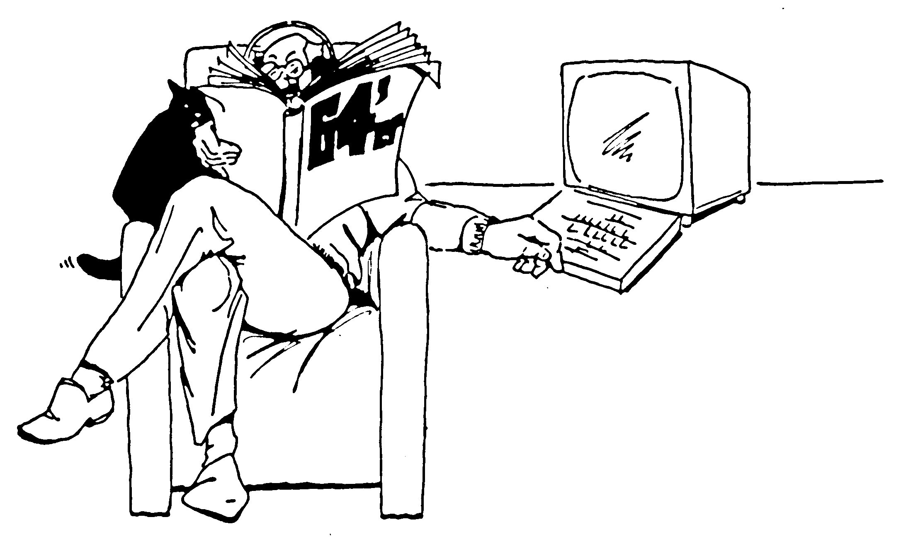
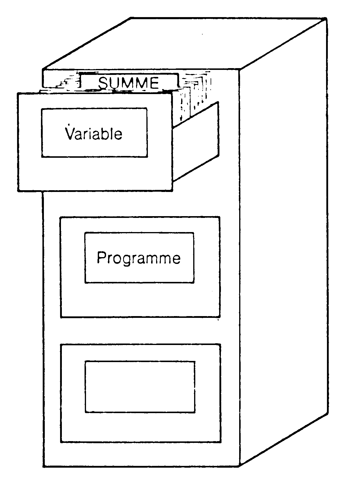
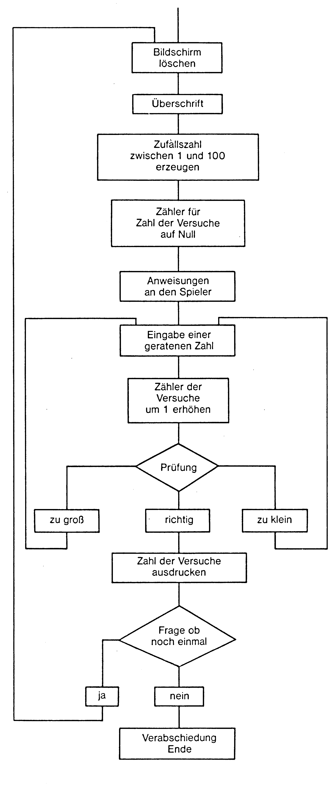
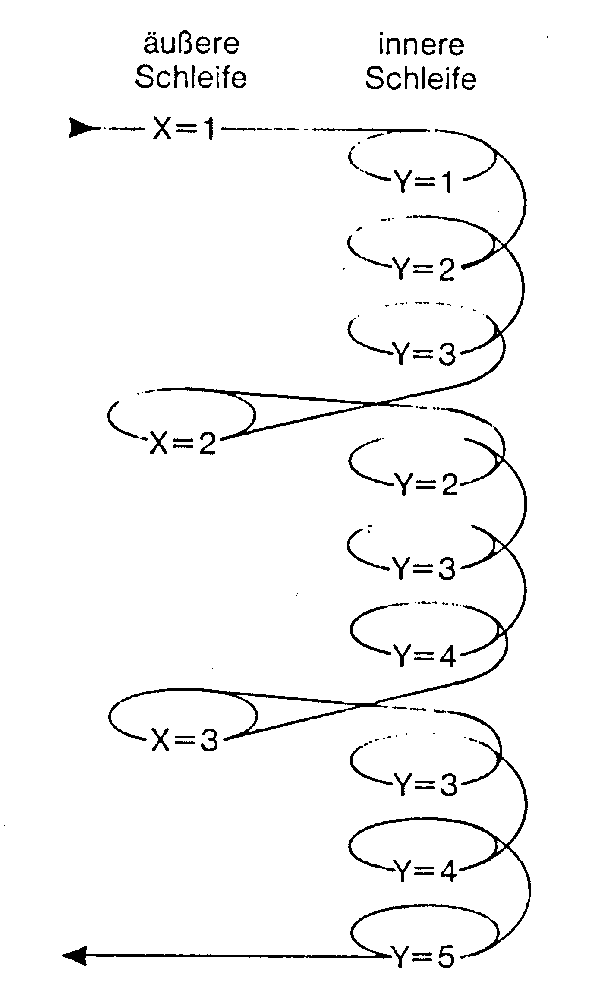

Basic-Kurs von Anfang an
Basic-Kenntnisse gehören heute zur Allgemeinbildung! Ein Commodore-Besitzer muß einfach Basic können, um mit seinem Computer vernünftig zu arbeiten. Denn die meisten Programme sind in Basic geschrieben. Sie werden staunen, wie schnell Sie ein funktionierendes Basic-Programm geschrieben haben! Hier zeigen wir allen Neulingen am Computer, wie man programmiert.
Alle Anfänge werden begleitet von guten Vorsätzen! Am Anfang dieses Basic-Kurses möchte ich keine Ausnahme machen und sogar soweit gehen, Ihnen meine guten Vorsätze offen darzulegen.
- Ich habe den Kurs so geschrieben, daß Sie nur wenige Voraussetzungen mitbringen müssen, um ihn zu verstehen. Ich gehe davon aus, daß Sie die ersten Kapitel des Handbuches gelesen und angewendet haben, welches Ihnen beim Kauf des Computers mitgeliefert worden ist.
- Ich möchte gern ohne Fach-Chinesisch erklären. Wo ich ohne Fachausdrücke nicht auskommen kann – und das wird natürlich öfters vorkommen – werde ich sie erklären.
- Der Kurs beginnt ganz langsam, mit vielen leichten Beispielen und Wiederholungen.
- Der Kurs soll aber nicht langweilig sein. Er wird daher bald an Tempo zunehmen, im Vertrauen darauf, daß Sie sehr bald keine reinen Anfänger mehr sein werden.
- Ich gehe davon aus, daß Sie sich nicht ein rein theoretisches Basic aneignen, sondern programmieren lernen wollen. Das bedeutet aber, daß ich Ihnen auch Bedienungshinweise und Erklärungen der Arbeitsweise des Computers geben muß – so wenig wie möglich und so viel wie nötig.
- Der Kurs ist zwar speziell auf den C 64 zugeschnitten. Die meisten Angaben treffen allerdings auch auf den C 16 und den VC 20 zu.
- Der letzte Vorsatz ist eigentlich eine Aufforderung an Sie, liebe Leser. Wenn Sie etwas nicht verstanden oder spezielle Fragen haben, dann schreiben Sie mir bitte über den Verlag. Ich werde die Fragen entweder direkt beantworten oder aber die Fragen sammeln und Ihnen im 64'er eine eigene Frage-Antwort-Folge widmen.
Bevor wir anfangen, will ich noch schnell die Methode erwähnen, mit der Sie am besten den Kurs verfolgen und den Stoff nachvollziehen können.
Ich möchte diese Vorgehensweise »SIMULTANMETHODE« (Bild 1) nennen, was nichts anderes bedeutet, als das Heft mit Basic-Kurs vor dem Computer sitzend zu lesen und alle Angaben, die mit dem Zeichen → gekennzeichnet sind, sofort einzutippen und auszuprobieren.

Ich bin mir bewußt, daß ich dadurch eine Arbeitsweise begünstige, die von vielen Programmierspezialisten generell verteufelt und ganz besonders der Sprache Basic vorgeworfen wird, nämlich »Hackerei«.
Auf die Folgen der Hackerei, wie und wann man ihre Nachteile vermeiden kann, werde ich noch oft zurückkommen. Aber dazu müssen Sie erst einige Dinge über Basic wissen. Bis dahin will ich ganz bewußt die positiven Seiten des Hackens in Anspruch nehmen.
So, jetzt habe ich keinen Grund mehr, weitere schöne Einleitungsphrasen zu dreschen. Jetzt soll's losgehen.
Voraussetzung für ein Programm – egal, in welcher Sprache es geschrieben ist – ist eine Einrichtung, dem Computer mitzuteilen, was er tun soll und eine andere Einrichtung, um zu sehen, was er tut beziehungsweise was er getan hat. Dazu dient als allererstes die Tastatur und der Bildschirm.
Sobald wir den Computer einschalten, ist das Eingabegerät Tastatur direkt mit dem Ausgabegerät Bildschirm verbunden. Im Handbuch Ihres Computers haben Sie sicher schon nachgelesen, wie die Tastatur funktioniert und wie damit Zeichen auf den Bildschirm gezaubert werden. Ich will das nicht im Detail wiederholen, aber ein paar Gedanken ist das Thema »Tastatur«schon wert.
Zeichen-, Steuer- und Funktionstasten
Ich teile die Tasten in drei verschiedene Typen ein:
— Zeichentasten
— Steuertasten
— Funktionstasten
ZEICHENTASTEN erzeugen, wie ihr Name sagt, Zeichen. Dazu gehören Buchstaben und Zahlen, mathematische Zeichen (Addition, Multiplikation, runde Klammern etc.), Symbole (Dollar, Gänsefuß, Pfeile und so weiter) und grafische Zeichen. Die grafischen Zeichen stehen nicht oben auf den Tasten, sondern auf ihrer Vorderseite.
Jede Zeichentaste bietet mehrere Zeichen und Symbole zur Auswahl. Um die verschiedenen Zeichen einer Taste auszuwählen und auf den Bildschirm zu bringen, verwenden wir spezielle Tasten wie SHIFT, CTRL und so weiter Diese Tasten nenne ich STEUERTASTEN.
Sie steuern auf sehr direkte Art und Weise alle Vorgänge auf dem Bildschirm. Aber sie erlauben auch, innerhalb von Programmen deren Abläufe zu steuern und zu verändern.
Ich halte diese Tasten für wichtig genug, um trotz ihrer Behandlung im Handbuch von Commodore etwas näher auf sie einzugehen.
Bevor ich das mache, will ich der Vollständigkeit halber auch die dritte der von mir genannten Gattung, nämlich die Funktionstasten erwähnen.
Mit FUNKTIONSTASTEN werden die 4 senkrecht untereinander angeordneten Tasten f1 bis f7 rechts außen bezeichnet. Sie sind universell für alle möglichen Funktionen einsetzbar, können diese Funktionen aber erst dann erfüllen, wenn sie entsprechend programmiert worden sind. Aus diesem Grund werde ich sie erst später behandeln und ich lasse sie vorläufig links – Verzeihung, natürlich rechts – liegen.
Zurück zu den Steuertasten, von denen ich oben sagte, daß sie im direkten Gebrauch Dinge steuern, die sich auf dem Bildschirm abspielen.
Ich meine damit zum Beispiel die CTRL-Taste, mit der die acht verschiedenen Zeichenfarben schwarz bis gelb eingestellt werden können. Ich meine damit auch die SHIFT-Taste, welche den rechten Teil der Zeichen und grafischen Symbole umschaltet. Dazu gehört auch die Taste links unten, die das Firmenzeichen von Commodore trägt und welche die linken Symbole umschaltet.
Dazu gehören schließlich und letztlich die Cursor-Steuertasten CRSR, die INST/DEL-Taste und die CLR/HOME-Taste.
Diese letztgenannten Tasten sind eng mit der Wirkungsweise des sogenannten EDITORS verbunden.
Editor ist ein englisches Wort und heißt soviel wie Redakteur. In unserem Fall ist der Editor ein im Computer fest eingebautes Programm, welches wie ein Redakteur dafür sorgt, daß auf dem Bildschirm alle Zeichen und Symbole in den entsprechenden Farben auf den richtigen Platz kommen.
Ein recht sichtbares Hilfsmittel, dem Editor unsere Wünsche und Vorstellungen mitzuteilen ist der CURSOR.
Die Bedeutung und seine Handhabung haben Sie ja sicher schon dem Handbuch entnommen. Das Wort »Cursor« kommt nicht vom englischen »curse« = verfluchen (obwohl das Verhalten des Cursors oft dazu verleitet), sondern aus dem lateinischen Wortschatz, wo es »Läufer« bedeutet.
Der Cursor läuft also über den Bildschirm, gesteuert vom Editor. Wir können seinen Lauf auch steuern, und zwar mit den beiden Cursor-Steuertasten (ach so!).
Eine andere Steuerung des Cursors bietet uns die CLR/HOME-Taste rechts oben. Allein gedrückt – dann gilt HOME – bringt sie den Cursor »nach Hause« nämlich in die linke obere Ecke des Bildschirms. Wird die Taste mit SHIFT umgeschaltet, bedeutet sie CLR – das heißt CLEAR, auf deutsch FREIMACHEN oder LÖSCHEN. Jetzt wird nämlich der Cursor nach links oben gebracht und zusätzlich der Bildschirm gelöscht.
Probieren Sie bitte diese Cursor-Bewegungen aus.
→ Am besten fahren Sie den Cursor in die Mitte des Bildschirms, tippen ein paar beliebige Buchstaben ein und drücken dann die HOME-Taste.
→ Wiederholen Sie das Ganze und verwenden Sie dann die CLR-Taste.
Der Editor bietet uns noch einen anderen sehr lobenswerten Service. Er berücksichtigt nämlich, daß wir alle sehr menschliche Menschen sind, die nicht nur viele Fehler machen, sondern auch immer wieder ihre Meinung ändern. Der Editor erlaubt uns, Fehler zu korrigieren oder bereits getippte Zeichenfolgen abzuändern.
→ Wir können mit dem Editor ungestraft über vorhandene Zeichen fahren, ihn nach Lust und Laune anhalten und dort, wo er gerade blinkt, ein neues Zeichen eintippen.
Ich nenne das »überschreiben«. Wo wir ein Überschreiben nicht anwenden können, hilft uns die INST/DEL-Taste (rechts oben) weiter.
INST ist die Abkürzung für INSERT, das heißt soviel wie EINFÜGEN.
DEL bedeutet DELETE, und das heißt ENTFERNEN oder AUSLÖSCHEN.
Im Handbuch steht nur eine kurze Beschreibung der Wirkung dieser Taste, die aber nicht unbedingt ausreichend ist. Schon erste Versuche zeigen, daß die Taste ihre Tücken hat. Ich bin dafür, DEL und INST einfach auszuprobieren.
→ Schalten Sie den Computer aus und dann wieder ein.
→ Fahren Sie mit dem Cursor auf das A von READY. Er steht jetzt an der dritten Stelle vom linken Bildrand.
→ Drücken Sie die DEL-Taste. Das E ist verschwunden, es steht nur noch RADY da, der Cursor blinkt immer noch auf dem A, er ist aber jetzt an die zweite Stelle vom linken Bildrand gerückt.
→ Ein zweiter Druck auf die DEL-Taste reduziert das Wort ADY, und der Cursor steht jetzt auf der ersten Stelle.
Die DEL-Taste löscht also das links neben dem Cursor stehende Zeichen und verschiebt den Cursor mitsamt dem ganzen rechten Schwanz eine Stelle nach links. Was passiert aber, wenn der Cursor am linken Bildrand angestoßen ist?
→ Ein dritter Druck auf die DEL-Taste bringt den Cursor an den rechten Bildrand eine Zeile darüber, nur da gibt es gerade nichts zu löschen. Seinen ADY-Schwanz läßt er am Anfang der unteren Zeile zurück.
→ Lassen Sie DEL-Taste gedrückt. Der Cursor läuft kontinuierlich weiter nach links, löscht alles, was ihm in den Weg kommt – solange, bis er »zu Hause« links oben angekommen ist.
Der geSHIFTete Teil dieser Taste, nämlich INST ist ebenso trickreich.
→ Schalten Sie den Computer aus und wieder ein.
→ Fahren Sie mit dem Cursor wieder auf das A von READY.
→ Drücken Sie die INST-Taste (SHIFT + INST/DEL). Der Cursor bleibt auf seiner dritten Stelle vom linken Bildrand stehen. Aber das Zeichen, auf dem er blinkt und alles, was rechts von ihm steht, wird eine Stelle nach rechts geschoben. Wo der Cursor blinkt, entsteht eine freie Stelle, auf die direkt ein neues Zeichen geschrieben werden kann.
→ Durch mehrfaches Drücken der INST-Taste werden mehrere Stellen freigeschoben, in die mehrere Zeichen hintereinander eingefügt werden können.
Dieses Freimachen beziehungsweise Einfügen geht nicht in beliebiger Länge, da der Editor – wie ein echter Redakteur auch – gewissen Einschränkungen unterliegt. Ich würde natürlich am liebsten jetzt weiter über den Editor mit allen seinen Regeln und Einschränkungen dozieren. Und irgendwann muß ich es auch noch tun, denn beim Experimentieren werden Sie sicher noch darauf stoßen und wissen dann vielleicht nicht weiter.
Damit Sie aber nicht ungeduldig werden, möchte ich auf weitere Feinheiten vorläufig verzichten und das bisher Gelernte für die ersten Schritte in Basic anwenden.
FAZIT
Die Zeichen- und Steuertasten erzeugen eine direkte Wirkung auf dem Bildschirm. Der Bildschirm wird von einem eingebauten Programm verwaltet – dem Editor. Er ermöglicht beliebige Änderungen und Korrekturen von bereits eingegebenen Texten und Zahlen.
Computer bedeutet Rechenmaschine
Dies weist uns den Weg für das weitere Vorgehen.
Wenn jeder simple Taschencomputer rechnen kann, dann müssen es die Commodore-Computer auch können. Dazu will ich Ihnen noch schnell die Symbole der mathematischen Funktionen aufschreiben.
| FUNKTION | SYMBOL | BEISPIEL |
|---|---|---|
| Addition | + | 3+2 |
| Subtraktion | - | 3-2 |
| Multiplikation | * | 3*2 |
| Division | / | 3/2 |
| Potenz | ↑ | 3↑2 |
Die unterste Funktion ist wahrscheinlich die für Sie ungewohnteste. Das Beispiel wird im Klartext als »drei hoch zwei« oder als »drei Quadrat« gelesen.
Beim Taschenrechner wird normalerweise eine Rechnung so eingegeben:
→ 3 + 2 =Aber beim C 64 rührt sich da gar nichts, außer daß diese Zeile auf dem Bildschirm steht.
Und warum passiert nichts??
Überlegen Sie – alles, was wir gemacht haben – war, per Tastendruck Zahlen und Symbole einzutippen. Wir haben lediglich den Editor auf Trab gehalten, den Computer selbst haben wir damit nicht aufgeweckt.
Dieser Faulpelz schläft nämlich so lange, bis er einen Auftrag bekommt, etwas auszuführen. Für diesen Tritt, der ihn hinter dem Ofen hervorscheucht, brauchen wir eine der vorher zwar erwähnten, aber noch nicht eingesetzten Steuertasten zur Programmsteuerung.
Sie sitzt am rechten Rand der Tastatur und ist mit RETURN gekennzeichnet.
Schreiben wir also die Zeile von oben nocheinmal. Dieses Mal bitte ich Sie aber, nicht die Eingabe-Technik der Taschencomputer zu verwenden, sondern mir eine »lesbare« Schreibweise nachzumachen – Sie werden gleich sehen, warum.
Schließen Sie die Eingabe mit der RETURN-Taste ab. Das sieht dann so aus:
→ SUMME = 3 + 2
→ Drücken Sie die RETURN-TasteAber wir sehen ja noch immer nichts!
Aller Anfang ist schwer. Wir müssen berücksichtigen, daß der Computer nichts, aber auch gar nichts von allein macht.
Für alles braucht er eine Anweisung. Nun, oben haben wir ihm die Anweisung gegeben, die Summe aus 3 plus 2 zu bilden. Das hat er auch gemacht, glauben Sie es mir. Aber wir haben ihm nicht gesagt, was er mit der Summe machen soll, und so hat er sie sich einfach nur gemerkt.
Wir wollen sie natürlich auf dem Bildschirm sehen. Dazu müssen wir dem Computer eine spezielle Anweisung geben.
Dieser Befehl, irgend etwas auf dem Bildschirm auszudrucken, lautet in Basic
PRINT.
Nach PRINT, was auf deutsch »drucken« heißt, geben wir dem Computer an, was er ausdrucken soll – in unserem Beispiel die Summe.
→ PRINT SUMME
→ Drücken Sie die RETURN-Taste.Heureka! Endlich sind wir weitergekommen. Auf dem Bildschirm steht, vom Editor in die nächste Zeile gebracht, die Zahl, welche der Computer für die SUMME ausgerechnet hat.
Ich schlage vor, daß Sie mit dem ersten Wort der Sprache Basic, das Sie nun gelernt haben, noch ein bißchen üben.
Bilden Sie das Produkt von 15 mal 14. Das geht doch einfach, oder?
→ PRODUKT = 15 * 14
→ nicht vergessen RETURN zu drücken(Sie wissen doch, mit RETURN geben wir dem Computer die Anweisung, die getippte Zeile auszuführen)
→ PRINT PRODUKT
→ RETURN drückenWenn Sie gut Kopfrechnen können, dürfen Sie das Resultat nachprüfen. Oder vielleicht nehmen Sie einen Taschenrechner! Ich wette, irgend ein Leser sagt jetzt: »Was soll der Quatsch. Man kann doch die Rechnung 15*14 direkt mit PRINT ausführen. Der Umweg über SUMME= oder PRODUKT= ist doch völlig unnötig«.
Tja, liebe Leser, das stimmt in der Tat. Diese Kurzform ist erlaubt, und ich will Sie Ihnen gleich vorführen, vielleicht mit der Division. Wir wollen 3 durch 2 teilen. Geben Sie dazu ein:
→ PRINT 3/2
→ RETURN drückenWir erhalten sofort den Wert 1,5 – aber halt!! Er ist 1.5, also nicht mit Komma, sondern mit Dezimalpunkt geschrieben. Das ist die amerikanische Schreibweise, an die Sie sich gewöhnen müssen als Preis dafür, daß Sie mit amerikanischen Computern arbeiten.
Also – der Befehl PRINT führt eine nachfolgende Rechnung direkt aus und druckt das Resultat auf den Bildschirm. Ist demnach meine oben genannte Methode, die Rechnung in zwei Schritten auszuführen, tatsächlich Quatsch?
Meine Antwort ist ein klares Nein. Beide Methoden haben ihre Berechtigung, und ich will Ihnen auch den Unterschied zeigen.
Mit der ersten Methode (wir haben sie bei SUMME und PRODUKT angewendet) erhält der Computer zuerst den Auftrag, eine Rechnung durchzuführen. Das Resultat merkt er sich unter dem Stichwort SUMME beziehungsweise PRODUKT. Haben Sie es gelesen? Er merkt sich das Resultat und legt es in einem Speicher (Bild 2) ab. Das bedeutet, daß wir es mit PRINT so oft wir wollen, auf den Bildschirm drucken können. Geben Sie jetzt gleich nochmal ein:
→ PRINT SUMME
→ RETURN drücken
Und siehe da, das Resultat von vorhin erscheint wieder. Dasselbe geht mit dem Stichwort PRODUKT.
Sie brauchen übrigens die Zeile nicht neu einzugeben. Vergessen Sie den Service des Editors nicht!
→ Fahren Sie mit dem Cursor auf die letzte PRINT-Zeile und überschreiben Sie das Wort SUMME mit dem Wort PRODUKT, dann muß nur noch die RETURN-Taste gedrückt werden.
Und noch einmal siehe da, wir erhalten das Resultat der Multiplikation wieder.
So, und was ist mit der Division?
Leider, leider! Da geht nichts mehr. Wir haben kein Stichwort für das Resultat vorgegeben, und der Computer hat sich auch nichts gemerkt. Das ist also der Unterschied:
| • PRINT 3 + 2 | • SUMME = 3 + 2 • PRINT SUMME |
| Das Resultat der Rechnung wird ausgedruckt | Das Resultat der Rechnung wird unter dem Stichwort SUMME gespeichert und dann ausgedruckt |
Die linke Anwendung des Befehls PRINT ist einfach, und Sie können sie immer verwenden, um auf Art eines Taschenrechners schnell einmal irgendwelche Rechnungen zu machen. Aufgezeichnet wird das Resultat allerdings nur auf dem Bildschirm. Im Computer selbst bleibt nichts gespeichert.
Die rechte Art ist schwieriger, aber interessanter. Es ist eigentlich erstaunlich, daß wir dem Computer die Anweisung geben, sich eine Zahl unter einem Namen oder – wie ich es vorhin genannt habe – unter einem Stichwort zu merken, ohne einen Basic-Befehl geben zu müssen.
Es gibt tatsächlich einen Befehl dafür, er heißt:
LET
Die Anweisung mit dem Stichwort »SUMME« sieht unter Zuhilfenahme des Befehls LET so aus:
LET SUMME = 3 + 2In unseren Sprachgebrauch übersetzt heißt das ungefähr: »Laß die Summe gleich dem Resultat von 3 plus 2 sein«. In der Computersprache nennt man das eine ZUWEISUNG.
Wir können demnach beliebige Stichwörter hernehmen und ihnen mit dem LET-Befehl Zahlenwerte zuweisen, der Computer merkt sie sich alle.
Wie würden Sie zum Beispiel dem Stichwort A (kürzer kann es nicht sein) den Wert 375 zuweisen, dann dem Stichwort X den Wert 15 und schließlich die Division von vorhin, die der Computer sich gemerkt hat, jetzt dauerhaft durchführen ? Versuchen Sie es:
So muß es aussehen:
→ Löschen Sie den Bildschirm (CLR/Home+SHIFT)
→ LET A = 375 (RETURN drücken)
→ LET X = 15 (RETURN drücken)
→ LET QUOTIENT = 3/2 (RETURN)Jetzt sind im Computer die zwei Werte unter den Stichworten A, X und das Ergebnis der Division unter dem Namen QUOTIENT gespeichert.
Mit PRINT-Befehlen können wir alle drei auf den Bildschirm bringen:
→ PRINT A (RETURN drücken)
→ PRINT X (RETURN drücken)
→ PRINT QUOTIENT (RETURN drücken)SUMME, PRODUKT, A, X und QUOTIENT, die wir bisher »Stichwörter« oder »Namen« genannt und welchen wir mit dem LET-Befehl einen Wert zugewiesen haben, werden mit einem eigenen Fachausdruck bezeichnet.
Sie heißen Variable (siehe nächste Seite). Ich werde später noch mehr über sie berichten. Heute bitte ich Sie lediglich, sich den Namen zu merken – manchmal werde ich vielleicht auch noch Stichwort sagen.
Wozu brauchen wir den Befehl »LET« ? Am Anfang haben wir ohne ihn den Stichwörtern Resultate zugewiesen!
In Basic kann in der Tat der Befehl LET weggelassen werden. Wichtig ist lediglich, daß zuerst die Variable dasteht, gefolgt von dem Gleichheitszeichen (=) und dahinter der Wert (oder der durch die Rechnung auszurechnende Wert).
Interessant ist übrigens, daß der Computer sich ein- und dasselbe Stichwort nur einmal merkt. Wenn Sie zuerst dem Stichwort QUOTIENT den Wert 3/2 zuweisen und gleich danach den Wert 15/3, erhalten Sie mit dem PRINT-Befehl nicht die Zahl 1.5, sondern 5.
Das erste Resultat hat der Computer in seinem Speicher durch das zweite überschrieben. Probieren Sie es aus:
→ PRINT QUOTIENT (RETURN drücken)
→ LET QUOTIENT = 15/3 (RETURN drücken)
→ PRINT QUOTIENT (RETURN drücken)Zuerst kommt der alte Quotient von vorhin, danach der neue Wert.
FAZIT
- Nicht nur wir können Zeichen auf den Bildschirm bringen – der Computer selbst kann das auch. Der Befehl PRINT druckt alles, was dahinter steht, auch Ergebnisse von Rechenanweisungen, auf den Bildschirm.
- Unter einem Stichwort (Variable genannt) kann sich der Computer Zahlenwerte merken, die beliebig oft mit dem PRINT-Befehl ausgedruckt werden können. Voraussetzung ist lediglich, daß mit dem LET-Befehl dem Stichwort der Zahlenwert zugewiesen wird. Das Wort »LET« selbst kann auch weggelassen werden.
PRINT ist ein sehr vielseitiger Befehl
Ist Ihnen das viele PRINT-Tippen, so wie bei den Beispielen oben, auch so lästig wie mir?
Diesen Dauerversuch mit unzähligen PRINT-Befehlen können Sie vereinfachen. Alle Commodore-Computer sind nämlich Meister der Abkürzung. So drastisch, wie wir den Befehl LET durch Weglassen abgekürzt haben, dürfen wir den Befehl PRINT nicht behandeln. Aber immerhin: Er wird mit dem Fragezeichen abgekürzt.
Das Befehlswort »PRINT« kann durch das »?« ersetzt werden
| Statt | PRINT 123 |
| dürfen Sie schreiben | ? 123 |
Jetzt geht der Versuch, alle auf den Tasten vorkommenden Zeichen und Symbole über den Befehl PRINT auszudrucken, natürlich viel schneller. Machen Sie bitte Gebrauch von dieser Abkürzung, wann immer Sie wollen.
Ich werde allerdings stets das ganze Befehlswort verwenden, damit der Text gut lesbar bleibt.
Die Sprache Basic gewährt uns noch eine Marscherleichterung. Es ist nämlich erlaubt, mehrere auszudruckende Werte hinter einen einzigen PRINT-Befehl zu setzen.
Zuerst will ich Ihnen zeigen, wie Sie es nicht machen dürfen – probieren geht über studieren.
Haben Sie die alten Stichwörter noch im Computer?
Wenn ja, dann brauchen Sie die folgenden Zuweisungen nicht nochmal eingeben. Ich wiederhole sie für alle Leser, die inzwischen ihren Computer ausgeschaltet und damit sein Gedächtnis gelöscht haben.
→ A = 375 (RETURN drücken)
→ X = 15 (RETURN drücken)
→ QUOTIENT = 15/3 (RETURN drücken)Sie sehen, ich habe LET weggelassen.
So, die Werte haben ihr Stichwort beziehungsweise den Kennbuchstaben, unter dem sie der Computer in seinem Speicher wiederfindet. Jetzt wollen wir sie mit einem einzigen PRINT-Befehl ausdrucken:
→ PRINT A X QUOTIENT (RETURN drücken)Der Computer druckt eine Null aus. Wie gesagt, so geht's nicht.
Wenn ich Ihnen sage, warum eine Null erscheint, werden Sie gleich auf die Lösung des Problems kommen. Was passiert da?
Für den Computer ist eine Leerstelle (zwischen den Variablen) genau so ein Zeichen wie jeder Buchstabe. Das heißt, daß er nach dem Drücken der RETURN-Taste in seinem Speicher nach einem Stichwort »A X QUOTIENT« sucht – und das findet er natürlich nicht.
Ihnen ist sicher klar, daß wir also die drei Stichwörter voneinander trennen müssen. Die Rechtschreibregeln von Basic erlauben keine Wörtertrennung mit Leerzeichen, sondern mit dem Semikolon »;«.
Verbessern Sie bitte (durch einfaches Einfügen von zwei Semikolons) die letzte Zeile oben:
→ PRINT A;B;QUOTIENT (RETURN drücken)Jetzt stimmt's.
Bei diesem Beispiel kann ich Ihnen noch etwas zeigen, diesmal eine Eigenheit – oder besser gesagt eine Vorsorge – des guten alten Editors. Schauen Sie sich genau an, wie der Editor die drei Zahlen 375, 15 und 5 auf den Bildschirm geschrieben hat. Vor der ersten Zahl steht eine Leerstelle, zwischen den Zahlen sind zwei Leerstellen.
Das kommt daher, daß der Editor vor jeder Zahl eine Stelle reserviert, um im Fall einer negativen Zahl Platz für das Minuszeichen zu haben. Und zwischen den Zahlen hält er natürlich einen Abstand frei. Wie bereits gewohnt, wollen wir das am Computer überprüfen.
→ Bitte geben Sie die drei Werte unserer Variablen als negative Zahlen, also mit einem Minuszeichen ein.
Wenn Sie die Zuweisungen noch auf dem Bildschirm stehen haben, geht es schneller mit Hilfe des Editors. Fahren Sie mit dem Cursor auf die jeweils vorderste Ziffer, schaffen Sie mit der INSERT-Taste (INST/DEL + SHIFT) eine Leerstelle und tippen Sie ein Minuszeichen ein, danach wie immer ein RETURN.
Fahren Sie mit dem Cursor auf die Zeile mit dem PRINT-Befehl und drücken Sie die RETURN-Taste.
Ja, der Editor macht es uns wirklich sehr bequem. Und jetzt sehen Sie auch, daß die reservierten Plätze im Ergebnis von den Minuszeichen belegt worden sind. Was bleibt, sind lediglich die Abstände – der guten Lesbarkeit zuliebe.
Das Semikolon ist nicht das einzige Symbol zur Trennung von Variablen hinter einem PRINT-Befehl. Die von Commodore verwendeten Versionen von Basic erlauben auch das Komma – allerdings hat es eine etwas andere Wirkung als das Semikolon.
→ Ersetzen Sie in der Zeile oben, welche den »dreifachen« PRINT-Befehl enthält, die zwei Semikolon durch Komma (direkt durch Überschreiben). RETURN-Drücken nicht vergessen!
Wir sehen jetzt wieder die drei Zahlen, aber viel weiter auseinandergerückt.
Dabei wird der Bildschirm sozusagen in 4 Teile geteilt. Die ausgedruckten Werte beginnen am linken Rand, dann ab dem 10., 20., und 30. Platz.
FAZIT
Hinter einem einzigen PRINT-Befehl können mehrere Werte auf einmal ausgedruckt werden. Sie müssen entweder durch ein Semikolon oder ein Komma getrennt sein.
Das Semikolon bewirkt bei Zahlen einen »normalen« Abstand von 2 Leerstellen.
Das Komma verschiebt die Werte auf das nächste Bildschirm-Viertel.
Buchstaben ausdrucken
Bisher haben wir nur mit Zahlen gearbeitet.
Was aber macht der PRINT-Befehl mit allen anderen Zeichen und Symbolen? Versuchen Sie es ruhig einmal. Fangen Sie mit den Tasten links oben an und arbeiten Sie sich durch.
Schon bei dem PRINT-Befehl der allerersten Taste, nämlich dem Symbol »Pfeil nach links« reagiert der Computer unerwartet.
→ PRINT ← (RETURN drücken)ergibt eine englische Meldung auf dem Bildschirm:
SYNTAX ERROR READY
Mit der Meldung »SYNTAX ERROR« sagt uns der Computer, daß wir einen Rechtschreib- oder Satzbaufehler begangen haben. Das Zeichen ← darf zum Beispiel nicht so einfach mit einem PRINT-Befehl verwendet werden.
Alle mathematischen Zeichen, Interpunktionen, die geSHIFTeten Symbole der Zifferntasten und andere reagieren in dieser Form.
Andere wieder, wie zum Beispiel mit SHIFT- oder Commodore-(C=)-Taste umgeschalteten Buchstaben (auf die auf der Vorderseite der Tasten angegebenen Grafiksymbole), ergeben gar keine Reaktion.
Den PRINT-Befehl mit Buchstaben haben wir ja schon mehrfach verwendet. In dem Beispiel ganz oben hat er allerdings nicht den Großbuchstaben A, sondern den Zahlenwert ausgedruckt, der unter dem Kennbuchstaben A im Computer gespeichert worden ist.
Versuchen Sie es mit einem anderen Buchstaben oder Wort, welchem wir noch keinen Wert zugewiesen haben, zum Beispiel:
→ PRINT WORT (RETURN drücken)Wir erhalten eine Null.
Das heißt nichts anderes, als daß der PRINT-Befehl schlicht und einfach jeden Buchstaben bzw.. jede Buchstabenfolge als ein Stichwort – als eine Variable – interpretiert und deren Wert im Speicher sucht, um sie auszudrucken. Haben wir ihr noch keinen Wert zugewiesen, wie in unserem letzten Beispiel dem Wort »WORT«, dann druckt er eine Null aus.
Wenn der für den Bildschirm zuständige Editor (ein fest eingebautes Computerprogramm) bereitwillig alle Buchstaben druckt, die wir direkt mit der Tastatur eingeben, dann muß es der Computer mit dem PRINT-Befehl auch können.
Die Lösung für unser Problem könnte man als zungenbrechendes Kochrezept so hinschreiben:
Um den Computer mitzuteilen, daß das Wort »WORT« ein Wort sein soll, muß man »WORT« schreiben. Das Geheimnis liegt im Gebrauch der Gänsefüße!
→ PRINT "WORT" (RETURN drücken)Zwischen Gänsefüßen können Sie auch alle grafischen Symbole der Buchstabentasten, die auf der Vorderseite der Tasten zu sehen sind, per PRINT auf den Bildschirm bringen.
Für die linken Symbole müssen wir mit der Taste gleichzeitig die Commodore-Taste (unten ganz links), für die rechten Symbole die SHIFT-Taste drücken.
Die Schwierigkeit für mich liegt nun darin, daß ich Ihnen im Text des Kurses diese speziellen Symbole nicht ohne weiteres angeben kann. Diese Commodore-spezifischen Zeichen und Symbole hat der Setzer des Verlages verständlicherweise nicht zur Verfügung.
Daher werde ich an ihrer Stelle folgende Symbole anwenden:
— für die SHIFT-Taste............ (SHIFT)
— für die Commodore-Taste........... (C=)
— (SHIFT W) bezeichnet das Symbol vorn rechts auf der W-Taste
— (C= Z) bezeichnet das Symbol vorn links auf der Z-Taste
Ich zeige es am besten an einem Beispiel:
→ PRINT "(SHIFT U)(SHIFT I)" (RETURN drücken)dann druckt der Computer aus den beiden Viertelkreisen der U- und I-Taste einen Halbkreis aus.
Noch ein Beispiel:
→ PRINT "(C= Q)(C= W)" (RETURN drücken)ergibt ein großes H.
Der Gänsefuß-Modus
Die Schreibweise zwischen Gänsefüßen erlaubt uns, nicht nur Buchstaben und deren umgeschaltete grafische Zeichen, sondern auch Ziffern und alle Symbole auszuPRINTen.
Verzeihen Sie mir bitte dieses saloppe Computerdeutsch. Eigentlich ist es ja nicht sehr schön, was wir da mit der deutschen Sprache machen und ich müßte mich eigentlich schämen, daß ich derartige Wortschöpfungen verwende. Aber abgesehen davon, daß Computerdeutsch gewisse Vorgänge sehr kurz und präzise ausdrückt, verteidige ich mich gern damit, daß andere Gruppen unserer Gesellschaft ja auch ihre eigenen Ausdrücke haben, wie die Segler, Musiker und Jäger. Bei den letzteren meine ich natürlich nicht das Jägerlatein.
Wo waren wir stehen geblieben? Ach ja, beim ausPRINTen von Ziffern und Symbolen.
→ PRINT "()" (RETURN drücken)Diese Anweisung druckt die beiden Klammern ohne SYNTAX ERROR aus. Alle Pfeile, Sterne, Interpunktionen und arithmetischen Symbole sind willig ausdruckbar, wenn sie in Gänsefüße eingepackt sind.
Apropos Interpunktionen! Wir haben gelernt, daß mit dem Semikolon Stichwörter (Variable) voneinander getrennt werden können, selbst wenn sie hintereinander bei derselben PRINT-Anweisung stehen.
Zwischen Gänsefüßen verlieren sie diese Wirkung; sie sind dann nichts anderes als grafische Zeichen. Geben Sie ein:
→ A = 3 (RETURN)
→ B = 12 (RETURN)
→ C = 17 (RETURN)
→ PRINT A;B;C;"A;B;C" (RETURN)Zuerst wird der Wert der drei Variablen A, B und C nebeneinander ausgedruckt, gefolgt von den 5 Symbolen zwischen den Gänsefüßen.
Mit dem Komma und seiner verschiebenden Wirkung ist es ebenso.
Und Ziffern? Ziffern gehen auch, aber sie gingen ja vorher schon, ohne Gänsefüße.
Da ist aber ein ganz kleiner Unterschied. Passen Sie auf:
→ PRINT 123 (RETURN)
→ PRINT "123" (RETURN)— Der erste PRINT-Befehl versteht die Ziffern 123 als Zahl und reserviert, wie früher schon besprochen, eine Stelle vorher für das Vorzeichen.
— Der PRINT-Befehl mit Gänsefüßen versteht die Ziffern 123 als grafische Symbole, die natürlich kein Vorzeichen brauchen und daher auch keine Platzreservierung bekommen.
Dieser feine Unterschied ist recht wichtig, wenn Zahlentabellen oder Zahlengrafiken erzeugt werden sollen. Wir stoßen später sicher noch darauf.
Bevor ich ein weiteres Fazit ziehe, möchte ich Ihnen eine – vorläufig – letzte Anwendung des PRINT-Befehls zeigen.
Wir haben gesehen (und angewendet), daß eine auf den Bildschirm geschriebene Zeile erst dann zu einer Anweisung für den Computer wird, wenn sie mit dem Drücken der RETURN-Taste »abgeschlossen« wird. Wir haben daher immer nur einen einzigen Befehl in eine Zeile geschrieben.
Die Frage stellt sich natürlich:
Können wir mehrere Befehle in
eine einzige Zeile schreiben??
Wie immer – probieren geht über studieren! Geben Sie ein:
→ PRINT "1.BEFEHL" PRINT "2.BEFEHL"
→ drücken Sie die RETURN-TasteNun, SYNTAX ERROR sagt uns, daß diese Schreibweise nicht erlaubt ist.
Wie bei mehreren Variablen brauchen wir bei mehreren Befehlen auch ein Symbol zur Trennung. Bei Befehlen ist dies der Doppelpunkt. Fügen Sie bitte zwischen die beiden PRINT-Befehle oben einen Doppelpunkt ein und drücken Sie nochmal auf Return.
Es muß also dastehen:
→ PRINT "1.BEFEHL" : PRINT "2.BEFEHL"Jetzt stehen die beiden »Befehle« ausgedruckt da – untereinander!
Durch den Doppelpunkt werden die zwei PRINT-Befehle so behandelt, als stünden sie in zwei getrennten Zeilen.
Und damit wird auch unsere anfängliche Rechnerei wesentlich einfacher – ich hoffe, Sie erinnern sich noch. Sonst schauen Sie bitte nochmal am Anfang nach.
Für die Berechnung der Summe 3 + 2 brauchen wir nur eine Zeile:
→ SUMME = 3 + 2 : PRINT SUMME (RETURN)Damit soll's erstmal genug sein. Ich glaube, Sie haben jetzt eine ganze Reihe von Regeln gelernt, die für die ersten Schritte der Programmierung eines Commodore-Computers sehr wichtig sind.
FAZIT
- Buchstaben werden vom PRINT-Befehl als Variable eingestuft, und entsprechend wird ihr Wert ausgedruckt.
- Ziffern und Zahlen werden vom PRINT-Befehl als arithmetische Ausdrücke gewertet und erhalten dementsprechend ein Vorzeichen. Das positive Vorzeichen wird nicht ausgedruckt, eine Leerstelle ist dafür vorhanden.
- Alle Symbole der Tastatur, welche zwischen Gänsefüßen stehen, werden vom PRINT-Befehl als graphische Zeichen erkannt und formgetreu ausgedruckt.
- Um mehrere Befehle in eine einzige Zeile schreiben zu können, müssen sie durch einen Doppelpunkt voneinander getrennt sein.
- Schreibfehler oder inkorrekte Anweisungen quittiert der Computer mit der Fehlermeldung SYNTAX ERROR.
Was ist ein Programm ?
Bislang haben wir den Computer so benützt, als wäre er ein Taschenrechner.
Wir haben alle Angaben, Befehle und so weiter direkt eingetippt; und der Computer hat sie nach dem Drücken der RETURN-Taste direkt ausgeführt.
Ich habe mit Absicht das Wort direkt gleich zweimal verwendet. Diese Art des Betriebs wird nämlich DIREKTMODUS genannt.
Im Gegensatz dazu steht der sogenannte PROGRAMM-MODUS.
Jetzt also taucht das Schlagwort Programm zum ersten Mal auf. Haben Sie schon sehnlich darauf gewartet? Es wäre kein Wunder, wollen wir doch Programmieren lernen.
In meinem alten Konversationslexikon steht unter Programm: Festfolge. Sie wissen, was damit gemeint ist, nämlich eine detaillierte Angabe der einzelnen Darbietungen und Aktivitäten einer Veranstaltung in ihrer genauen zeitlichen Reihenfolge.
Diese Definition läßt sich gut auf einen Computer übertragen.
Wenn ein Computer viele Befehle in einer bestimmten Reihenfolge nacheinander ausführen soll, müssen sie ihm als »Festfolge« vorgegeben sein. Diese Festfolge muß er auswendig kennen – was für ihn kein Problem bedeutet, besitzt er doch ein gutes Gedächtnis.
Dieses »Gedächtnis« haben wir ja schon kennengelernt. Die im Direkt-Modus eingegebenen Werte von Stichwörtern (Variablen) hat er in seinem Variablen-Speicher festgehalten und wir konnten sie jederzeit abfragen.
Ein Rechner hat aber auch einen Programm-Speicher, in welchem er ein aus mehreren Befehlen bestehendes Programm festhält.
Alles, was wir tun müssen, ist ihm die Befehle und ihre Reihenfolge einzugeben. Wie tun wir das?
Die Angabe der Reihenfolge ist sehr simpel. Wir geben einfach jedem Befehl eine Nummer.
Die Eingabe der Befehle geht genauso wie vorher – mit der RETURN-Taste. Nur – vorher hat der Computer den Befehl sofort ausgeführt. Wenn aber eine Nummer davorsteht, dann führt er den Befehl nicht aus, sondern steckt ihn in seinen Programmspeicher.
Das machen wir jetzt gleich einmal. Geben Sie bitte unsere allerersten Rechenanweisungen mit Befehlsnummern ein:
→ 1 SUMME = 3 + 2 (RETURN-Taste drücken)
→ 2 PRINT SUMME (RETURN)Siehe da, er hat nichts ausgeführt und ich behaupte, dieses kleine Programm steht jetzt im Programmspeicher.
Ich kann das auch beweisen. Es gibt einen Befehl in Basic, der alles, was im Programmspeicher steht, in der Reihenfolge der Befehlsnummern auf dem Bildschirm ausdruckt. Er heißt
LIST
was auf deutsch soviel wie »auflisten« bedeutet.
→ Löschen Sie den Bildschirm mit der CLR-Taste
→ Tippen Sie direkt das Wort LIST ein und drücken Sie die RETURN-Taste.
Quod erat demonstrandum (auf deutsch: »Was zu beweisen war«).
Die beiden Anweisungen samt Nummer erscheinen auf dem Bildschirm.
Den ersten Satz dieser Befehlsbeschreibung haben wir ja schon praktiziert. Den zweiten Satz möchte ich vorläufig erst mal so stehen lassen. Zu seiner Erprobung brauchen wir längere Programme und die haben wir vorerst noch nicht.
So, unser Programm, bestehend aus zwei Befehlen, hat der Computer gespeichert. Jetzt soll er es ausführen!
Unsere alte Methode, den Computer hinter dem Ofen hervorzuscheuchen, war der Tritt mit der RETURN-Taste. Diese bringt uns hier aber überhaupt nichts. Was wir brauchen ist ein Befehl, der den Computer veranlaßt, das Programm auszuführen. Ein derartiger Befehl wird uns von Basic geboten. Er heißt RUN
was mit »loslaufen« übersetzt werden könnte.
→ Tippen Sie direkt das Wort RUN ein und drücken Sie die RETURN-Taste.
Und wie der Blitz, so schnell können Sie gar nicht schauen, steht das Resultat auf dem Bildschirm.
Na ja, sagen vielleicht einige Skeptiker unter Ihnen, im Direkt-Modus vorhin ging das auch nicht viel langsamer, besonders die Einzeiler-Version mit dem Doppelpunkt.
Richtig, aber wir haben ja nur zwei Befehle verwendet. Nehmen Sie mal 20 Befehle, da sieht die Sache schon anders aus. Abgesehen von der Geschwindigkeit gehen die überhaupt nicht in eine Zeile – und was dann?
FAZIT
- Der Computer hat einen Speicher mit mehreren getrennten Bereichen. Alle Variablen und ihre jeweiligen Werte stehen im Variablenspeicher. Programmzeilen stehen im Programmspeicher.
- Immer wenn die RETURN-Taste gedrückt wird, überprüft der Computer die Zeile, in der sich gerade der Cursor befindet. Beginnt die Zeile mit einer Nummer, wird sie als Programmzeile erkannt und im Programmspeicher abgelegt.
Hat sie keine Nummer am Anfang, dann führt sie der Computer im Direkt-Modus sofort aus. - Mit dem Basic-Befehl LIST wurden alle im Programmspeicher stehenden Zeilen in Reihenfolge der aufsteigenden Zeilennummern auf dem Bildschirm ausgedruckt.
- Ein Programm wird mit dem Basic-Befehl RUN gestartet.
Nun sollten wir uns schleunigst an ein längeres Programm wagen. Natürlich verwenden wir nur Dinge, die wir bisher schon verwendet beziehungsweise besprochen haben.
Das erste richtige Programm
Zuerst brauchen wir einen Plan, was programmiert, oder besser gesagt, was vom Computer gemacht werden soll.
Ich schlage dazu folgende Aufgabenstellung vor:
a) Unter dem Stichwort A sollen zwei Zahlen multipliziert werden
b) Unter dem Stichwort B sollen zwei Zahlen dividiert werden
c) Die Variable (das Stichwort) C sei die Differenz der Werte von A und von B
d) Der Wert von A wird nicht als Zahl, sondern als Gleichung ausgedruckt.
f) Dann folgt eine Textangabe, wie der Wert von C berechnet wird. Dabei sollen im Text die jeweiligen Werte von A und B automatisch eingesetzt werden.
g) Als letztes wird auch der Wert von C als Gleichung ausgedruckt.
Das klingt schlimmer, als es ist. Wir müssen es einfach Schritt für Schritt angehen. Für Punkt a nehmen wir die Zahlen 24 und 3
→ 1 A = 24 * 3 (RETURN)In dieser Zeile mit der Nummer 1 weisen wir den Variablen A das Resultat der Multiplikation von 24 mal 3 zu. Wir hätten das auch mit dem Basic-Befehl LET machen können, aber wie gesagt, man kann ihn weglassen.
Punkt b verlangt etwas Ähnliches, wir nehmen die Zahlen 16 und 8.
→ 2 B = 16/8 (RETURN)Auch Punkt c macht keine Ausnahme, nur verwenden wir jetzt statt absoluter Zahlen die Variablen A und B. Der Computer muß selbst im Lauf des Programms die Werte für A und B im Variablenspeicher heraussuchen und einsetzen.
→ 3 C = A - BBis hierhin war alles so wie gehabt. Im Punkt d soll der Wert von A, also das Resultat aus Zeile 1 als »Gleichung« ausgedruckt werden.
Was ich damit meine, ist schnell gesagt. Der Befehl PRINT A würde nur den Zahlenwert von A auf den Bildschirm bringen. Ich möchte aber, daß das Programm hinschreibt:
A = 72
Wie erreichen wir das ?
Nun, die Zahl 72 ist der Wert von A, mit PRINT A zu erzielen. Davor steht ein Text! Damit der PRINT-Befehl A = hinschreibt, müssen wir den Gänsefuß-Modus anwenden. Das sieht dann so aus:
→ 4 PRINT "A =" A (RETURN)Was zwischen den Gänsefüßen steht, druckt der Computer so aus, wie es ist. Das zweite A steht nackt da, also ist es eine Variable, deren Wert der Computer direkt hinter den Text »A =« setzt – mit Vorzeichenstelle natürlich.
Wenn Sie es nicht glauben oder es sich nicht vorstellen können, lassen Sie doch diesen ersten Teil des Programms gleich einmal laufen. Zur besseren Übersicht löschen Sie zuerst den Bildschirm mit der .....-Taste (nicht raten, wissen!).
Keine Angst, es wird nur der Bildschirm gelöscht, aber nicht das Programm im Programmspeicher. Um das nachzuprüfen, LISTen Sie es aus. Wenn das Programm schön dasteht, lassen Sie es mit RUN und RETURN-Taste laufen.
Auf Ihrem Bildschirm steht jetzt unter der Programm-Liste:
A=72
Das ist also das Resultat der Zeile 4. Genauso machen wir es mit dem Punkt e.
→ 5 PRINT "B = " B (RETURN)Punkt f ist reiner Text, den ich in zwei PRINT-Befehle aufteile, damit der Text in zwei getrennten Zeilen steht.
→ 6 PRINT "C ist A MINUS B,"
→ 7 PRINT "DAS HEISST," A "WIRD UM" B "VERRINGERT."Zeile 6 besteht aus reinem Text – alles steht zwischen Gänsefüßen. Zeile 7 ist wieder etwas komplizierter, aber sie enthält im Grunde genommen nichts anderes als die Zeilen 4 und 5 vorher. Man muß nur die Gänsefüße richtig abzählen. Zwischen den ersten beiden wird Text ausgedruckt, inklusive dem Komma. Dann folgt der Wert der Variablen A- ohne Gänsefüße natürlich. Zwischen den nächsten beiden Textteilen steht wieder einsam die Variable B, deren Wert der Computer suchen und hier einsetzen muß.
Auch jetzt ist es Ihnen schon erlaubt, einen vorläufigen Probelauf zu machen.
Schließlich führen wir noch Punkt g aus, wofür wir wieder die Methode der Zeilen 4 und 5 anwenden:
→ 8 PRINT "C =" CIch habe übrigens ganz klammheimlich den ursprünglich verwendeten Begriff der »Befehlsnummer« in »Zeilennummer« umgetauft. Haben Sie es gemerkt?
Zeilennummer ist tatsächlich der gängige Ausdruck, wohl daher, weil in einer Zeile mehrere Befehle stehen können, durch Doppelpunkte getrennt. Ich werde also im folgenden immer Zeilennummer sagen.
Es empfiehlt sich immer, ein Programm nochmal als Ganzes auszuLISTen. Also: Bildschirm löschen und LIST eingeben.
Wir sehen dann auf dem Bildschirm:
1 A = 24 * 3
2 B = 16/8
3 C = A - B
4 PRINT "A =" A
5 PRINT "B =" B
6 PRINT "C IST A MINUS B,"
7 PRINT "DAS HEISST,"A "WIRD UM" B "VERRINGERT"
8 PRINT "C =" CAlle diejenigen, welche den PRINT-Befehl mit dem Fragezeichen abgekürzt haben, werden jetzt staunen. Trotz der Abkürzerei steht im Programm-Ausdruck – auch Listing genannt – kein Fragezeichen, sondern das volle Wort »PRINT«. Das ist wieder die Tat des guten alten Editors, der flugs alles in seine rechte Bahn umlenkt und umkodiert.
Wenn Sie beim Tippen keine Fehler gemacht haben, dann dürfen Sie das Programm laufen lassen.
Wenn Sie einen Fehler entdeckt haben, dann nutzen Sie einfach den Editor aus und korrigieren Sie den Fehler direkt in der Zeile, wo er auftritt. Nach der Reparatur nicht die Zeile verlassen, sondern zuerst RETURN drücken, damit die neue, korrigierte Zeile an die Stelle der alten falschen Zeile, die ja dieselbe Nummer hat, gespeichert wird.
So, jetzt hindert uns aber niemand mehr am RUN (und natürlich RETURN-Taste). Auf Ihrem Bildschirm muß jetzt folgendes Resultat stehen:
A= 72 B= 2 C ist A MINUS B, DAS HEISST, 72 WIRD UM 2 VERRINGERT C= 70 READY
Ja, was wollen Sie machen, wenn das Programm noch immer nicht das tut, was es soll?
Als allererstes nicht verzweifeln! Tippfehler treten immer wieder auf, die der Computer in seiner Perfektion eben sofort merkt. Da er aber keine eigene Intelligenz hat, tut er wirklich nur genau das, was wir ihm anschaffen – mit allen Fehlern.
Eine Fehlersuche kann oft sehr mühsam sein, besonders bei langen und komplexen Programmen.
Nun, in unserem Fall dürfte es nicht allzu schwer sein, Zeile für Zeile alle Buchstaben und Symbole durchzugehen, bis Sie den Fehler gefunden haben.
Später werden wir noch Methoden der Fehlersuche kennenlernen. Heute möchte ich Sie noch nicht damit belasten.
Ich möchte vielmehr, daß Sie noch ein bißchen mit dem Programm spielen. Verändern Sie die Zahlenwerte in den Zeilen 1 und 2 durch direktes Überschreiben – aber immer mit RETURN abschließen, sonst bleibt der alte Wert erhalten.
Sie brauchen dann nicht erneut RUN eintippen, es steht ja noch da. Fahren Sie mit dem Cursor drauf und drücken Sie die RETURN-Taste. Sofort wird das Programm wieder ausgeführt und wie mit Geisterhand erscheinen neue Zahlen an den Stellen der Variablen.
Aber Achtung!! Die Werte auf dem Bildschirm werden nur überschrieben. Wenn der neue Wert kürzer ist als der alte, dann bleibt der »längere« Rest des alten Wertes stehen; das kann zur Verwirrung führen.
Das passiert dadurch, daß dem Computer ja keine Anweisung gegeben worden ist, vor der Berechnung den Bildschirm zu löschen. Diese Anweisung kommt erst später in unser Lehrprogramm.
Ein anderes »Experiment« besteht darin, die Zeilennummer einer Befehlszeile zu ändern.
→ Fahren Sie mit dem Cursor auf die 8 dieser Zeile
Überschreiben Sie die 8 mit der Ziffer 9 und drücken Sie Return
Wir haben jetzt eine neue Programmzeile geschaffen, mit identischem Inhalt wie die alte Zeile 8.
→ Geben Sie LIST und RETURN ein.
Siehe da, wir haben eine neue Zeile 9, aber die alte Zeile 8 ist auch noch da, natürlich, denn wir haben sie ja durch das Überschreiben nicht gelöscht.
Das Löschen einer Zeile geht ganz einfach:
→ Tippen Sie die Nummer der Zeile, in unserem Falle eine 8 und drücken Sie RETURN
Wir haben also eine Zeile 8 ohne Text beziehungsweise ohne Befehle eingegeben. Da dem Rechner sein Speicherplatz sehr kostbar ist, ignoriert er eine solche nichtssagende Zeile – sie ist weg. Überprüfen Sie es mit LIST.
Jetzt haben wir ein Programm, in dem in der Reihenfolge der Zeilen eine Nummer fehlt. Was macht das? Mit RUN können Sie sich überzeugen, daß das dem Computer völlig egal ist. Er braucht nämlich nur Zeilennummern in aufsteigender Folge, Lücken überspringt er einfach.
Das bedeutet aber, daß wir unser Programm oben auch mit den Zeilennummern 10..20..30.. und so weiter hätten schreiben können. In der Tat möchte ich Ihnen diese Vorgehensweise empfehlen, da sie ein späteres Einfügen von weiteren Programmzeilen erlaubt. Wir werden das noch üben.
FAZIT
- Innerhalb eines PRINT-Befehls können Variable und Zeichen beliebig miteinander gemischt werden. Wichtig ist nur, daß Zeichen immer innerhalb von Gänsefüßen stehen müssen.
- Ein bereits im Progammspeicher stehendes Programm kann auf dem Bildschirm jederzeit abgeändert werden. Es gelten bei dem »Überschreiben« alle Regeln und Möglichkeiten des Editors. Eine Änderung muß mit Return abgeschlossen werden.
- In dem Programmspeicher wird die jeweils letzte mit RETURN eingegebene Version einer Zeile gespeichert.
- Zeilennummern lassen sich auf dieselbe Art und Weise verändern. Eine Zeile wird durch Eingabe lediglich der Zeilennummer, also ohne Text, gelöscht.
- Zeilennummern brauchen nicht direkt aufeinander zu folgen. Lücken in der Zahlenfolge werden übersprungen.
- Es empfiehlt sich, ein Programm mit Zeilennummern zu versehen, die zum Beispiel jeweils um 10 voneinander verschieden sind. Das erleichtert das spätere Einfügen von zusätzlichen Programmzeilen.
Eingabe – oder wie sage ich es meinem Computer
Wir haben ein erstes kleines Programm geschrieben. Aber sein Wortschatz ist noch sehr begrenzt – LET und PRINT. Die beiden anderen Befehle LIST und RUN werden vorläufig nur im Direkt-Modus verwendet. Bevor wir unseren Basic-Wortschatz erweitern, empfehle ich Ihnen, das alte Programm aus dem Speicher des Computers zu entfernen und ihn frei zu machen für ein neues Programm.
Verwechseln Sie das bitte nicht mit dem Löschen des Bildschirms. Zur Klärung:
— Die CLR/HOME-Taste geSHIFTet löscht den Bildschirm; ein Programm im Speicher bleibt davon unberührt.
— Durch Aus- und Wiedereinschalten des Computers löschen Sie sowohl den Bildschirm als auch den Speicher des Computers, in welchem das Programm gespeichert ist. Der Computer meldet sich dann mit seinen Einschalt-Überschriften.
— Es gibt auch einen Basic-Befehl, der ein Programm aus dem Speicher hinauswirft, ohne den Bildschirm zu löschen. Er heißt
NEW
Probieren Sie es bitte aus.
→ Geben Sie eine beliebige Programmzeile (mit Nummer) ein, zum Beispiel:
20 PRINT"ABCDE"→ löschen Sie mit der DEL-Taste den Bildschirm
geben Sie direkt LIST ein
Jetzt erscheint die obige Zeile 20 wieder.
→ geben Sie direkt NEW ein und nach der RETURN-Taste wieder den Befehl LIST
Die Programmzeile 20 ist verschwunden
Seien Sie also vorsichtig mit diesem Befehl, immer erst überlegen, bevor Sie NEW mit der RETURN-Taste abschließen, hat er doch eine so gut wie endgültige Wirkung. Salopp ausgedrückt »löscht« er den Programmspeicher.
Auch dieser Befehl wird fast ausschließlich nur im Direkt-Modus eingesetzt.
So, jetzt aber möchte ich Sie mit der Möglichkeit vertraut machen, während des Ablaufs eines Programms – also nicht schon beim Eintippen desselben – dem Computer Anweisungen in Form von Zahlen und Wörtern zu geben.
Bislang haben wir, wie gesagt, alle Zahlen und Wörter, die der Computer auf den Bildschirm bringen sollte, immer vorher, das heißt, beim Schreiben der Programmzeilen eingegeben, als Wert-Zuweisung für eine Variable (das gute alte Stichwort), mit und ohne LET-Befehl.
Dasselbe während des Ablaufs eines Programms ermöglicht der BASIC-Befehl
INPUT (gefolgt von einer Variablen)
Auf deutsch würde dieser Befehl »Eingabe« heißen.
Im Direkt-Modus können wir ihn leider nicht einsetzen. Versuchen Sie es ruhig:
→ INPUT A (RETURN nicht vergessen!)Der Computer bestraft uns mit der Fehlermeldung »ILLEGAL DIRECT«. Aber im Programm-Modus, das heißt mit einer Zeilennummer versehen, geht es. Auch das wollen wir ausprobieren:
→ 10 INPUT A (RETURN)Jetzt nur noch RUN eingeben, und siehe da, der Computer druckt ein Fragezeichen und wartet mit blinkendem Cursor.
Daß er wirklich wartet, merken Sie daran, daß er beharrlich immer wieder die Fehlermeldung »REDO FROM START« – was einfach »NOCH EINMAL« heißt – und danach das auffordernde Fragezeichen ausdruckt, wenn Sie einen Buchstaben oder ein Zeichen eingeben.
Er akzeptiert nur Zahlen, und außerdem noch die Leertaste, den Punkt, das Plus- und das Minuszeichen. Die RETURN-Taste bricht den Befehl ab, und das Programm fährt mit der nächsten Zeile fort.
Warum akzeptiert »INPUT A« nur Zahlen? Was passiert bei INPUT eigentlich?
Die Zahl, die wir per Tastatur eingeben, wird der Variablen A, die hinter dem Befehlswort INPUT steht, zugeordnet – genauso wie mit dem LET-Befehl.
Mit der folgenden Programmzeile, die Sie zusätzlich zur Zeile 10 eingeben, wird diese Zuordnung bewiesen:
→ 10 INPUT A
→ 20 PRINT ADie beiden Zeilen 10 und 20 zusammen ergeben ein Mini-Programm, welches nach RUN auf eine Eingabe wartet und diese – sofern es eine Zahl ist – auf dem Bildschirm ausdruckt.
Wir können also in der Tat mit der Tastatur innerhalb eines Programms Zahlenwerte in dasselbe eingeben. Aber warum nur Zahlen?
Die Antwort ist einfach: Einer Variablen, die den Namen »A«, oder »ZAHL« oder »SUMME« hat, dürfen nur Zahlen zugeordnet werden.
Das heißt aber nicht, daß wir auf schriftliche Anweisungen, die aus Buchstaben, Zeichen oder ganzen Wörtern bestehen, verzichten müssen. Der INPUT-Befehl akzeptiert sie auch, aber nur, wenn wir eine andere Art von Variable benützen.
Das ist ein neues Gebiet für uns. Erinnern Sie sich, beim LET-Befehl habe ich gesagt, daß ich die Variablen später noch genauer behandeln würde. Jetzt ist es soweit.
Es gibt mehrere Arten von Variablen
Ich habe Ihnen erklärt, daß wir mit Variable die Stichwörter bezeichnen, unter denen der Computer sich Zahlenwerte merkt und unter denen sie auch wieder aus dem Speicher hervorgeholt werden können.
Des öfteren wird das alles mit Schachteln verglichen, auf die der Name einer Variablen geschrieben wird. Ein Wert, welcher der Variablen zugeordnet wird, kommt in die Schachtel mit dem richtigen Namen hinein. Eine Kopie des Wertes kann jederzeit aus der Schachtel herausgeholt werden, wenn man ihren Namen kennt. Der Wert bleibt solange in der Schachtel, bis er durch einen neuen ersetzt wird.
Es gibt mehrere Arten von Variablen, von denen wir zwei besprechen wollen.
1. Numerische Variable
Diesen Typ haben wir bislang verwendet. Er enthält nur Zahlen: ganze Zahlen (325), Dezimalbrüche (0.325) und negative Zahlen (-325, -0.325).
Bei der Wahl des Namens der Variablen, der vorn auf die Schachtel geschrieben wird, sind wir ziemlich frei. Er muß nur immer mit einem Buchstaben anfangen. Die nachfolgenden Zeichen können Buchstaben, Ziffern oder grafische Zeichen sein.
Wir haben bisher X, SUMME, PRODUKT etc. verwendet. Wir dürfen aber auch B23X oder F5 nehmen.
Der Länge des Variablen-Namens ist theoretisch nur durch die Anzahl der verfügbaren Zeichen in der Programmzeile eine Grenze gesetzt. Praktisch ist das aber ohne Bedeutung, da der Computer nur die ersten beiden Zeichen als Namen verwendet. So vielsagend zum Beispiel in einem Programm die Variablen-Namen »PRODUKT« und »PROFIT« sein könnten, der Computer erkennt nur »PR« und nimmt an, es handle sich um dieselbe Variable. Also Vorsicht !!!
2. String-Variable
So nennen wir den zweiten Typ. Hier geht es nun um Schachteln, in die wir Buchstaben, Zeichen, Wörter, ja sogar ganze Sätze bis zu einer maximalen Länge von 255 Zeichen hineingeben dürfen.
Diese Aneinanderreihung von Zeichen bezeichnen wir mit »Zeichenketten« oder mit dem englischen Wort »String«, das sich wegen seiner Kürze allgemein durchgesetzt hat. Daher auch der Name »String-Variable«.
Der Name einer String-Variablen, der auf der Schachtel steht, ist genauso aufgebaut wie der einer numerischen Variablen, nur muß am Ende immer das Dollar-Zeichen »$« – die geSHIFTete 4-Taste – stehen.
Der Vergleich der beiden Variablentypen sieht so aus:
→ 10 A = 25
20 A$ = "ZEICHENKETTE"
30 PRINT A
40 PRINT A$Sie sehen, selbst bei gleichem Namen, nämlich A, unterscheidet der Computer exakt zwischen der numerischen Variable A und der Stringvariable A$.
Übrigens, beim PRINT-Befehl haben wir diesen Unterschied auch schon gemacht. Alles, was wir nämlich damals zwischen Gänsefüßen geschrieben haben, war nichts anderes als Zeichenketten oder Strings.
Strings und Stringvariable werden uns fortan laufend begegnen. Deswegen schlage ich zur Übung noch ein paar Beispiele vor.
Löschen Sie bitte das obige Programm mit NEW und geben Sie die folgenden Programmzeilen ein:
→ NEW
10 T$="HOLZ"
20 U$="FEUER"
30 W$="7"
40 X$="5"
50 PRINT U$:PRINT T$
60 PRINT U$;:PRINT T$
70 PRINT T$;:PRINT U$
80 PRINT W$;:PRINT X$
90 PRINT W$ X$Diese Programmzeilen ergeben auf dem Bildschirm folgendes Bild:
FEUER HOLZ HOLZFEUER FEUERHOLZ 75 75
In den Zeilen 10 bis 40 werden 4 String-Variable definiert und ihnen werden zwei Wörter und zwei Ziffern zugewiesen. Die Ziffern sind nicht Zahlenwerte, sondern auch Strings, da sie zwischen Gänsefüßen stehen.
Zeile 50 enthält zwei – durch den Doppelpunkt getrennte – PRINT-Befehle, die untereinander die Strings der beiden Variablen U$ und T$ ausdrucken.
Zeile 60 ist fast identisch mit Zeile 50, und doch ist ihr Resultat grundlegend verschieden, da beide Strings nebeneinander in einem Wort geschrieben werden. Der winzige Unterschied ist das Semikolon am Ende des ersten PRINT-Befehls. Wir haben das Semikolon schon kennengelernt, als Trennzeichen bei der Aneinanderreihung von mehreren numerischen Variablen innerhalb eines einzigen PRINT-Befehls.
Hier bei den Strings hat es eine entgegengesetzte Wirkung. Es klebt nämlich die Strings zweier Variablen, die in getrennten PRINT-Befehlen stehen, aneinander.
Ich weiß, das sieht verwirrend aus. Aber glauben Sie mir, diese »Rechtschreibregeln« werden Ihnen sehr rasch in Fleisch und Blut übergehen.
Zeile 70 ist ein weiteres Beispiel für den Alleskleber Semikolon, nur diesmal in umgekehrter Reihenfolge der Strings.
Zeile 80 zeigt Ihnen, daß die Ziffern 7 und 5 in der Tat nicht als Zahlenwerte, sondern als Strings behandelt werden. Numerische Variable werden , wie Sie sich erinnern, mit Leerzeichen für das Vorzeichen und für den Abstand ausgedruckt, Strings dagegen nicht. Und da ist es egal, ob der String zufällig eine Ziffer ist.
Zeile 90 schließlich zeigt, daß wie bei den numerischen Variablen auch mehrere String-Variable hinter einen einzigen PRINT-Befehl geschrieben werden können. Da das $-Zeichen das Ende der String-Variablen eindeutig festlegt, kann bei Strings das Semikolon weggelassen werden.
Die nächsten drei Zeilen erweitern das Programm:
→ 100 Y$=T$+U$
110 Z$=U$+T$
120 PRINT Y$:PRINT Z$Die beiden String-Variablen T$ und U$ werden zu einem neuen String Y$ und in umgekehrter Reihenfolge zu Z$ zusammengebaut (Zeile 100 und 110). Zeile 120 druckt uns das Resultat aus.
Zum Schluß will ich noch meine Behauptung von oben, daß nämlich nur die beiden ersten Zeichen einer Variablen erkannt werden, beweisen.
→ 130 PRODUKT=25:PRINT PR
140 PROFIT= 3:PRINT PR
150 PRINT PRODUKTZeile 130 weist der numerischen Variablen »PRODUKT« den Zahlenwert 25 zu und druckt ihn aus, wobei die ersten beiden Buchstaben der Variablen genügen, um sie im Speicher zu finden.
Zeile 140 tut dasselbe für die Variable »PROFIT« mit dem Zahlenwert 3. Und siehe da, die Variable PR, die vorher noch 25 war, wird jetzt mit dem Wert 3 ausgedruckt. Daß wir tatsächlich in Zeile 140 der Variablen PRODUKT einen neuen Wert zugewiesen haben, obwohl wir den Variablen-Namen PROFIT gewählt haben, beweist uns Zeile 150, die unter PRODUKT dennoch die 3 ausdruckt.
Übrigens, wenn Sie nur der Ablauf der letzten drei Zeilen des Programms interessiert, können Sie eine Eigenschaft des Befehls RUN ausnützen:
Wenn Sie
RUN 130
eingeben, läuft das Programm ab Zeile 130 los und läßt alle vorhergehenden Zeilen unbeachtet.
Wenn Sie aber nach dem RUN eine Zeilennummer angeben, die im Programm nicht vorkommt, läuft das Programm nicht los, sondern es meldet sich der Computer mit der Fehlermeldung »UNDEF'D STATEMENT« (undefined statement), was soviel heißt wie »Zeilennummer nicht definiert«.
FAZIT
- Wir haben bisher zwei Typen von Variablen kennengelernt:
– den »numerischen« Variablen weisen wir ausschließlich Zahlenwerte zu
– den Stringvariablen, gekennzeichnet durch das $-Zeichen am Ende des Variablennamens, weisen wir ausschließlich Zeichen, Buchstaben oder ganze Folgen von ihnen zu. Diese Zeichen- und Buchstabenfolgen heißen »Zeichenketten« oder »Strings«.
Zahlen sind auch zugelassen, nur werden sie wie Zeichen (und nicht als Zahlenwerte) behandelt. - Die Zuordnung von Zahlen oder Strings zum falschen Variablentyp führt generell zu einer Fehlermeldung und oft auch zum Abbruch des Programms.
- Das Semikolon am Ende eines PRINT-Befehls bewirkt, daß der nächste PRINT-Befehl, egal wo er steht, seinen Text direkt anschließend zum vorhergehenden druckt.
- Um ein Programm ab einer bestimmten Zeilennummer zu starten, wird diese Zeilennummer dem RUN-Befehl angehängt (RUN 600).
Mit den String-Variablen haben wir jetzt das notwendige Handwerkszeug zur Erweiterung des INPUT-Befehls.
Wir können nämlich jetzt mit dem Befehl
INPUT A$
die Eingabe einer Information in Form eines Strings programmieren.
Bitte löschen Sie das letzte Programm mit NEW und geben Sie die beiden früheren INPUT-Programmzeilen neu ein und zwar jetzt so:
→ 20 INPUT A$ (RETURN)
30 PRINT A$ (RETURN)Wenn Sie nun RUN eingeben, wartet der Computer mit dem Fragezeichen, bis Sie einen String eingeben und mit RETURN abschließen. Dann erst druckt er den String aus.
In einem benutzerfreundlichen Programm sollte natürlich bei dem wartenden Fragezeichen von INPUT dabeistehen, welche Art von Eingabe erwartet wird. Der Benutzer des Programms sieht ja schließlich die Programmzeile nicht, in welcher der INPUT-Befehl – mit oder ohne »$« – steht.
Eine derartige Angabe können wir leicht erzeugen, indem wir eine entsprechende PRINT-Zeile vor den INPUT-Befehl der Zeile 20 setzen:
→ 10 PRINT"TEXT-EINGABE"
20 INPUT A$
30 PRINT A$Als Ergebnis erhalten wir auf dem Bildschirm das Wort »TEXT-EINGABE«, darunter das Fragezeichen und wie gehabt den wartenden Cursor.
Wem das Untereinander nicht gefällt, der kann mit dem Semikolon als String-Kleber alles auf eine Zeile bringen:
→ 10 PRINT"TEXT-EINGABE";Aber es geht noch viel eleganter!!
Der INPUT-Befehl selbst kann die Angabe enthalten. Wir nennen das einen »Kommentar« oder auf englisch einen »Prompt«.
→ 10
20 INPUT"TEXT-EINGABE";A$
30 PRINT A$Zuerst wird die Zeile 10 gelöscht. Die Zeile 20 bringt dasselbe Ergebnis wie vorher die beiden Zeilen 10 und 20 zusammen.
Der Kommentar hinter dem INPUT muß immer zwischen Gänsefüßen stehen, darf maximal 38 Zeichen – auch Leerstellen zählen dazu – lang sein und muß von der Variablen (egal ob numerisch oder String) durch ein Semikolon getrennt sein.
Und noch eine feine Einrichtung hat der INPUT-Befehl: Man darf hinter ihn mehrere Variable hängen, die allerdings alle eingegeben werden müssen. Die Schreibweise ist der des PRINT-Befehls sehr ähnlich:
→ 40 INPUT"4 ZAHLEN";A,B,C,D
50 PRINT A;B;C;D
60 INPUT"3 STRINGS";A$,B$,C$
70 PRINT A$ B$ C$Sie sehen deutlich, daß der INPUT-Befehl ein Komma zur Trennung der Variablen verlangt, der PRINT-Befehl dagegen ein Semikolon, das aber, wie schon erwähnt, bei String-Variablen weggelassen werden kann.
Wenn Sie nun trotz des Kommentars, 4 Zahlen einzugeben, nur eine einzige eingeben und die RETURN-Taste drücken, gibt sich der Computer nicht zufrieden, sondern deutet mit einem doppelten Fragezeichen unmißverständlich darauf hin, daß noch weitere Eingaben erforderlich sind.
Die Zahlen, hintereinander eingegeben, müssen auch durch Kommata getrennt werden.
Der Sprungbefehl
Ich habe vor, als nächstes ein kleines, aber pfiffiges Spielprogramm mit Ihnen zu entwickeln. Doch dazu fehlen noch zwei weitere Basic-Befehle, auf die wir uns aber sofort stürzen wollen.
Die Sprache Basic enthält einen Befehl, der den Computer hüpfen läßt, und zwar auf eine mit diesem Befehl angegebene Programmzeile. Der Befehl lautet:
GOTO (Zeilennummer)
Er darf auch in der Form GO TO geschrieben werden.
Auf deutsch bedeutet er GEHE NACH.
Durch ihn veranlaßt, springt der Computer auf die angegebene Programmzeile und fährt dort mit dem Programm fort.
Der Befehl GOTO darf auch im Direkt-Modus verwendet werden.
Ich nehme an, daß Sie die letzte Version des INPUT-Programms noch im Computer haben. Wenn Sie jetzt direkt eintippen:
→ GOTO 60springt der Computer auf die Zeile 60 und führt sie und die nachfolgende Zeile aus. Im Direkt-Modus wirkt er also wie der RUN-Befehl.
Im Programm-Modus sieht er genauso aus, er ist halt nur mit einer Zeilennummer versehen:
→ 35 GOTO 60LISTen Sie bitte das vorhandene Programm erst noch einmal. Wir sehen jetzt:
20 INPUT "TEXT-EINGABE";A$ 30 PRINT A$ 35 GOTO 60 40 INPUT"4 ZAHLEN";A,B,C,D 50 PRINT A;B;C;D 60 INPUT"3 STRINGS";A$,B$,C$ 70 PRINT A$ B$ C$
Durch den Sprungbefehl in Zeile 35 rückt das Programm auf die Zeile 60 vor und überspringt die Zeilen 40 und 50.
Der GOTO-Befehl kann als Zieladresse aber auch eine niedrigere Zeilennummer als er selbst haben. Dann springt er im Programm zurück und bildet so eine Schleife. Geben Sie bitte ein:
→ 80 GOTO 60Dieser Sprungbefehl wiederholt die beiden Zeilen 60 und 70 endlos lange oder aber bis Sie die STOP- und die RESTORE-Taste drücken. Die STOP-Taste allein genügt nicht, weil sie vom INPUT-Befehl, der ja in der Schleife sitzt, nicht akzeptiert wird.
Wir können die obige Schleife ein bißchen verändern, indem wir die Zeile 80 so abändern
→ 80 GOTO 70Jetzt springt der GOTO-Befehl immer wieder auf die Zeile 70 zurück, so daß in rasender Geschwindigkeit nur noch der PRINT-Befehl wiederholt und der Bildschirm mit dem Ausdruck der zuletzt eingegebenen Strings gefüllt wird. Zu bremsen ist dieser Vorgang diesmal mit der STOP-Taste. Der INPUT-Befehl, der vorher die STOP-Taste allein nicht akzeptiert hat und nur durch RESTORE gestoppt werden konnte, ist ja diesmal nicht in der Schleife drin.
Schleifen sind nicht zur Verzierung da
Schleifen sind nützliche Werkzeuge der Programmierung. Zum Beispiel können wir damit zählen. Das will ich Ihnen zeigen. Geben Sie ein:
→ NEW
10 X = X + 1
20 PRINT XNach RUN druckt uns die Zeile 20 eine 1 aus. Am Anfang des Programms ist der Variablen X noch keine Zahl zugeordnet, also ist sie 0. In Zeile 10 wird 1 dazugezählt, was 1 ergibt.
Das ist beileibe nicht trivial, denn jetzt ergänzen wir das Programm mit:
→ 40 GOTO 10Die dadurch gebildete Schleife wiederholt den Vorgang, und in Zeile 10 wird bei jedem Durchgang die Variable X um 1 erhöht.
Dieses kurze Programm erzeugt eine Zählschleife, die eine endlose Zahlenkolonne über den Bildschirm sausen läßt. Mit der CTRL-Taste können Sie diesen Lauf verlangsamen, mit der STOP-Taste abbrechen.
Diese endlosen Schleifen sind aber wie Autobahnen ohne Ein- und Ausfahrt. Man kommt nicht drauf, und wer drauf ist, kommt nicht raus.
Wir brauchen also eine Methode, die den Aussprung aus einer Schleife ermöglicht. Dabei wollen wir aber angeben können, wann und wo wir ausspringen.
In einer Zählschleife wäre das denkbar beim Erreichen einer bestimmten Zahl, zum Beispiel 15.
Prüfung ohne Noten
Basic kennt einen Befehl, der prüft, ob eine bestimmte, von uns festlegbare Bedingung erfüllt ist. Dann nämlich tut er, was man ihm vorgegeben hat.
Der Befehl besteht aus den beiden Wörtern
IF THEN
auf deutsch WENN DANN.
Die volle Schreibweise sieht so aus:
IF (Prüfbedingung) THEN (Aktion)
IF X = 3 THEN PRINT "DREI"X=3 ist die Prüfbedingung, PRINT "DREI" die Aktion.
Der Befehl prüft also, ob die Prüfbedingung erfüllt ist oder nicht. Man sagt auch, er prüft, ob sie »wahr« oder »falsch« ist.
— ist sie erfüllt, dann wird die hinter dem THEN stehende Aktion ausgeführt
— ist sie nicht erfüllt, dann wird, ungeachtet dessen was noch in der Zeile steht, das Programm fortgesetzt.
Die Arbeitsweise sehen Sie am besten in unserem Beispiel. Fügen Sie bitte den Zeilen 10 und 20 die zwei folgenden Zeilen 30 und 50 hinzu:
→ 10 X = X + 1
20 PRINT X
30 IF X = 15 THEN GOTO 50
40 GOTO 10
50 PRINT "ENDE"Also, in Zeile 10 wird X zu 1, Zeile 20 druckt die 1 aus.
Zeile 30 prüft, ob X bereits den Wert 15 erreicht hat. Dies ist nicht der Fall. Deswegen geht das Programm in der nächsten Zeile – nämlich 40 – weiter. Zeile 40 springt auf Zeile 10 zurück. X wird um 1 erhöht und hat jetzt den Wert 2. Die Bedingung in Zeile 30 ist aber noch immer nicht erfüllt. Also wiederholt sich der ganze Vorgang so lange, bis die Bedingung des IF-Befehls erfüllt ist. Erst wenn X den Wert 15 erreicht hat, tritt der THEN-Teil des Prüfbefehls in Kraft und führt das aus, was hinter dem THEN steht. In unserem Beispiel springt er mit GOTO 50 aus der Schleife heraus auf die Zeile 50.
In Zeile 50 endet das Programm mit dem Ausdruck »ENDE«.
Man muß bei der Festlegung der Prüfbedingung aufpassen, daß sie überhaupt auch auftritt. Wenn wir zum Beispiel in Zeile 10 den Wert für X jeweils um 2 erhöhen, also die Zeile 10 so schreiben:
→ 10 X = X + 2ist die Schleife wieder endlos, weil 14 oder 16 erreicht wird, aber niemals 15.
Das Problem ist lösbar mit einer Prüfung, ob X größer als 15 geworden ist.
→ 30 IF X > 15 THEN GOTO 50.Jetzt wird die Zeile erst bei der Zahl 16 verlassen.
Als Prüfbedingung stehen uns mehrere mathematische und logische Ausdrücke zur Verfügung.
| ist gleich | = |
| kleiner | < |
| größer | > |
| kleiner oder gleich | <= |
| gleich oder größer | => |
| ist ungleich | <> |
| Boole'sches UND | AND |
| Boole'sches ODER | OR |
| Negation | NOT |
Die ersten sechs davon sprechen für sich selbst, die letzten drei (AND, OR UND NOT) werde ich in diesem Kurs nicht behandeln.
Mit der Ungleich-Bedingung können wir unsere Schleife sogar noch viel eleganter gestalten:
→ 30 IF X < > 15 THEN GOTO 10
40 PRINT "ENDE"
50Wir sparen Zeile 50 ein, weil die Prüfung immer erfüllt ist, bis X den Wert 15 erreicht hat.
Die Prüf-Variable kann auch ein String sein. Bitte ergänzen Sie das Programm mit den folgenden Zeilen:
→ 60 INPUT "JA ODER NEIN";A$
70 IF A$ = "JA" THEN GOTO 100
80 IF A$ = "NEIN" THEN GOTO 110
90 PRINT "FALSCHE EINGABE":GOTO 60
100 PRINT "JA"
110 PRINT "NEIN"Das wollen wir jetzt zeilenweise analysieren. Zeile 60 ist der uns schon bekannte INPUT-Befehl, der uns im Kommentar auffordert, entweder »JA« oder »NEIN« einzugeben.
Zeile 70 prüft, ob wir »JA« eingegeben haben. Ist das der Fall, dann springt sie auf Zeile 100, und wir erhalten den Ausdruck »JA«. Haben wir nicht das »JA« eingegeben, geht das Programm in der nächsten Zeile (80) weiter.
In der Zeile 80 wird geprüft, ob wir »NEIN« eingegeben haben. Wenn das zutrifft, springt sie auf Zeile 110, und das Wort »NEIN« wird ausgedruckt. Haben wir aber »NEIN« auch nicht eingegeben, sondern irgend ein anderes Wort (String), dann geht das Programm in der nächsten Zeile (90) weiter.
Ich hoffe, Sie sehen schon das typische Muster des IF..THEN-Befehls.
In Zeile 90 schließlich wird die Ermahnung ausgedruckt, doch nur mit »JA« oder »NEIN« zu antworten, und mit dem Rücksprung GOTO 60, mit dem Doppelpunkt als zweiter Befehl der Zeile 90 angehängt, wird eine neue Eingabe verlangt.
Einen kleinen Fehler hat das Programm noch. Wenn sie es mit RUN von Anfang an oder mit RUN 60 nur ab der INPUT-Zeile starten und gleich mit »JA« antworten, kommt zuerst Zeile 100 zum Zuge, aber gleich danach auch Zeile 110, und wir erhalten beide Ausdrucke, »JA« und »NEIN«.
Zeile 110 können wir in diesem Fall ausblenden, entweder durch eine Überbrückung mit GOTO (irgendwohin) oder mit einem neuen Basic-Befehl, der das Programm mit Zeile 100 beendet. Er heißt END.
Endstation mit End
Ändern Sie bitte Zeile 100 ab!
→ 100 Print "JA" : ENDJetzt klappt es.
Die letzten beiden Angaben in der Befehlsbeschreibung des IF. .THEN-Befehls muß ich Ihnen noch vorstellen.
Wir dürfen nach einem IF. .THEN-Befehl als Aktion gleich noch einen IF. .THEN-Befehl anhängen. Dadurch sind mehrere Prüfungen möglich.
Ein Beispiel dafür könnte sein, daß im Dialog mit einem Programm nach »Wild« gefragt wird und nur die beiden Tiere »Reh« und »Hirsch« als richtige Antwort zugelassen sind – alle anderen Antworten werden abgewiesen.
Dieses Beispiel können Sie direkt an das bisherige Programm anhängen.
→ 120 INPUT "IHRE ANTWORT";A$
130 IF A$ < > "REH" THEN IF A$ < > "HIRSCH" THEN 120
140 PRINT "RICHTIG"Zeile 120 bittet um eine Antwort, ohne zu sagen welche.
Zeile 130 prüft zuerst, ob »Reh« nicht die Antwort war. Ist das nicht der Fall (Vorsicht: doppelte Verneinung ist Bejahung), springt das Programm auf Zeile 140. Ist es der Fall, dann setzt Zeile 130 mit der zweiten Prüfung, nämlich ob die Antwort nicht »Hirsch« war, fort.
Auch jetzt springt das Programm bei Verneinung der Prüfung auf Zeile 140. Nur wenn beide Prüfungen richtig waren, nämlich weder »Reh« noch »Hirsch« eingegeben worden ist, dann tritt die Aktionsanweisung der Zeile 130 in Kraft, und das Programm springt zurück auf Zeile 120 und verlangt eine neue Antwort.
In Zeile 130 sehen Sie außerdem, daß ich nach dem THEN das GOTO weggelassen und gleich die Zeilennummer 120 geschrieben habe. Das ist erlaubt, aber, wie gesagt, nur bei der Kombination THEN GOTO.
Lassen Sie sich durch die »negative« Vorgehensweise dieses Beispiels nicht verunsichern. Mit einer »positiven« Frage geht es auch, nur wird dann das Programm länger.
Jetzt haben wir alles beisammen für ein erstes vollständiges Programm.
Wenn Sie den vorhergehenden Teil später nochmal durchgehen wollen, dann speichern Sie bitte das letzte Programm auf Band oder Diskette. Die Funktion der LOAD-, SAVE- und VERIFY-Befehle sind im Handbuch gut beschrieben. Wenn Sie zum erstenmal eine Diskette verwenden, denken Sie daran, daß Sie diese zuerst »formatieren«, das heißt, mit einem Namen und einer Identifizierungsnummer versehen müssen. Anleitung dazu gibt das Floppy-Handbuch.
Ein erstes Programm
Alle bisher behandelten Befehle kommen in einem kleinen Spielprogramm vor, welches ich dem Buch »Computerspiele und Knobeleien programmiert in Basic« von Rüdiger Baumann entnommen habe. Dieses Buch kann ich Ihnen sehr empfehlen, denn es ist keine Programmsammlung, sondern ein ausgezeichnetes Lehrbuch, mit leichten und anspruchsvollen Aufgaben.
Der Witz des Spiels beruht auf einem Trick mit den Zahlenwerten von Münzen. Herr Baumann nennt es »Welche Hand«. Ich erlaube mir, seine Aufgabenstellung zu zitieren:
»Der Computer fordert den Spieler auf, eine 10-Pfennig-Münze in die eine und eine 1-Pfennig-Münze in die andere Faust zu nehmen. Nun bittet er darum, den Wert der Münze in der RECHTEN HAND mit einer GERADEN ZAHL und den Wert der Münze in der LINKEN HAND mit einer UNGERADEN ZAHL zu multiplizieren, die Ergebnisse zu addieren und dem Computer mitzuteilen, ob die Summe GERADE oder UNGERADE ist.
Daraufhin teilt der Computer dem Spieler mit, in welcher Hand sich die 10-Pfennig-Münze und in welcher sich die 1-Pfennig-Münze befindet.«
Der Trick beruht auf den folgenden Regeln:
| gerade * gerade | = gerade |
| ungerade * gerade | = gerade |
| ungerade * ungerade | = ungerade |
| gerade + gerade | = gerade |
| ungerade + gerade | = ungerade |
Wir haben nur zwei Fälle:
LINKS:
| UNGERADE * 10 (PFG.) | = GERADE |
| UNGERADE * 1 (PFG.) | = UNGERADE |
RECHTS:
| GERADE * 10 (PFG.) | = GERADE |
| GERADE * 1 (PFG.) | = GERADE |
Wir sehen, daß das Ergebnis in RECHTS immer eine gerade Zahl ist, egal mit welcher Münze. Also hängt die Summe aus RECHTS und LINKS nur vom linken Ergebnis ab:
Wenn die Summe ungerade ist, ist LINKS das 1-Pfennig-Stück, ist sie GERADE, dann ist links das 10-Pfennig Stück.
Diese Abfrage, Eingabe und Entscheidung wollen wir jetzt programmieren. Nehmen Sie bitte meine Zeilennummern, damit am Ende alles zusammenpaßt.
→ 300 INPUT "'GERADE' oder 'UNGERADE'";A$
310 IF A$ = "GERADE" THEN xxx
320 IF A$ = "UNGERADE" THEN yyy
330 PRINT : PRINT
340 PRINT "FALSCHE EINGABE" : GOTO 300Diese 5 Zeilen sollten Ihnen jetzt schon vertraut sein.
Zeile 300 fordert zur Eingabe des Resultats der Kopfrechnung auf, mit einem entsprechenden Kommentar.
Zeile 310 prüft, ob die Antwort das Wort GERADE war. Ist das der Fall, springt sie nach weiter unten auf eine Zeilennummer, die wir noch nicht wissen. Ich habe sie deshalb xxx genannt; wir werden sie dann noch nachtragen.
War die Prüfung der Zeile 310 falsch, kommt die Zeile 320 an die Reihe mit der Prüfung auf das Wort UNGERADE. Auch deren Sprungadresse wissen wir noch nicht, und sie bekommt den vorläufigen Namen yyy.
Zeile 330 druckt uns aus Gründen der Lesbarkeit auf dem Bildschirm 2 Leerzeilen.
Zeile 340 schließlich kommt bekanntlich zum Zuge, wenn beide Prüfungen falsch waren. Sie mahnt zur richtigen Eingabe und springt zurück auf den INPUT-Befehl in Zeile 300.
Jetzt kommen die Konsequenzen aus den positiven Entscheidungen der Zeilen 310 und 320.
War das Resultat GERADE, dann ist Links das 10-Pfennig-Stück (siehe oben). Also definieren wir in der nächsten freien Zeile –es ist 350 – eine String-Variable für das Zehnerl mit dem Namen M10$ und geben ihr den Wert LINKS
→ 350 M10$ = "LINKS"Diese Zeile ist die Sprungadresse xxx in der Zeile 310, was wir dort nachtragen!
310 IF a$ = "GERADE" THEN 350Wenn das Zehnerl links ist, muß rechts der Pfennig sein, also definieren wir entsprechend:
360 M01$ = "RECHTS"Am Ende soll das Ergebnis ausgedruckt werden. Wir machen das ab Zeile 400.
→ 400 PRINT : PRINT
410 PRINT "DIE 10-PFENNIG SIND ";M10$
420 PRINT "DER 1-PFENNIG IST ";M01$
430 ENDZeile 400 dient wieder der Schönschrift.
Zeile 410 setzt hinter den Text für die 10-Pfennig-Münze, mit einer Leerstelle und dem Semikolon-Kleber die String-Variable M10$.
Zeile 420 macht das gleiche für den Pfennig.
Zeile 430 ist nicht absolut notwendig, aber guter Brauch.
Jetzt fehlt uns nur noch der zweite Fall: wenn die Prüfung (in Zeile 320) eine Eingabe namens UNGERADE entdeckt hat. Jetzt ist, wie oben erläutert, das Zehnerl rechts und der Pfennig links, und die beiden String-Variablen M10$ und M01$ bekommen diese Werte zugewiesen:
→ 380 M10$ = "RECHTS"
390 M01$ = "LINKS"Nachzutragen ist der Wert für yyy in Zeile 320
→ 320 IF A$ = "UNGERADE" THEN 380Probieren Sie es aus und lassen Sie es laufen. Wenn das Programm noch streikt, LISTen Sie es aus und suchen Sie den Schreibfehler, denn das ist es ja in den meisten Fällen. Zur Kontrolle können Sie auch in das separat abgedruckte komplette Programm schauen und eventuelle Dubiositäten beseitigen.
Das komplette Programm enthält, wie Sie sehen, noch die Anweisungen für das Spiel. Deren Erklärung kann ich mir schenken, denn es sind lediglich PRINT-Befehle, die für sich selbst sprechen.
Doch halt! Vier Dinge im Programm Nummer 1 kennen Sie vielleicht noch nicht.
Ich habe versucht, das Listing – so nennen wir den Ausdruck des Programms – lesbar anzulegen. Eine Methode dazu besteht darin, Leerzeichen an entsprechenden Stellen einzugeben. Basic macht nämlich keinen Unterschied zwischen:
PRINT A$ + B$ und PRINTA$+B$.
Die erste Version braucht zwar 3 Speicherplätze mehr – eben die 3 Leerzeichen, aber Version 2 ist schlecht lesbar.
Zur besseren Lesbarkeit gehört auch, daß ab und zu eine Leerzeile eingefügt wird, die den Programmablauf nicht beeinflußt. Im Programm sind dies die Zeilen 30, 270 und 290. Man erreicht dies durch einen Doppelpunkt nach der Zeilennummer, ohne Befehl.
Eine dritte Art, das Listing zu verbessern ist der Befehl
REM.
Er kommt von REMARK und bedeutet »Bemerkung«. Mit diesem Befehl kann man Text in das Listing eingeben, der aber vom Programm völlig ignoriert wird. Im Beispiel sind dies die Zeilen 40 und 380.
Der vierte Punkt, der Ihnen im Listing des Programms Nummer 1 auffallen müßte, ist die Tatsache, daß bei allen PRINT-Befehlen der Text auf der linken Seite zwar mit einem Gänsefuß anfängt, aber rechts nicht mit dem Gänsefuß aufhört.
Das ist am Ende einer Zeile erlaubt, weil ja die Zeile mit der RETURN-Taste abgeschlossen worden ist.
FAZIT
- Leerzeilen, die nur im Listing auftreten, das Programm aber nicht beeinflussen, erzeugt man durch einen Doppelpunkt hinter der Zeilennummer.
- Bei der Abarbeitung einer Programmzeile ignoriert BASIC alle Leerzeichen, solange sie nicht zwischen Gänsefüßen stehend zu einem String gehören. Sie können daher weggelassen werden.
- Am Ende einer Zeile kann der abschließende Gänsefuß weggelassen werden.
Es könnte sein, daß der eine oder andere Leser seufzt und meint, daß bei aller Kenntnis der Basic-Befehle das Ausdenken eines Programms viel zu schwer sei.
Deswegen wollen wir es ja üben, und ich habe aus derselben Quelle von R. Baumann, aus der auch Programm Nummer 1 stammt, eine andere Anwendung gefunden. Sie baut nicht auf einem so verflixten Trick auf, braucht aber drei weitere Basic-Befehle.
Der Zufall im Computer
Diese Überschrift ist eigentlich ein Widerspruch in sich, da doch im Computer alles durch die Anweisungen des Programms fest vorgegeben ist. Und doch gibt es etwas Zufallähnliches.
Es ist sowohl bei mathematischen Anwendungen als auch bei Spielen oft erforderlich, von einer nicht vorher bekannten, völlig zufällig entstandenen Zahl auszugehen. Wie könnte sie anders heißen als »Zufallszahl«.
Basic hat einen Befehl, der eine derartige Zufallszahl erzeugt. Er heißt:
RND(X)
Der Name ist abgeleitet aus RANDOM, was auf deutsch »zufällig« bedeutet.
Das X, das in Klammern hinter dem Befehlswort steht, wird Argument genannt. Das X kann drei Werte haben:
— eine positive Zahl (egal, welcher Wert)
— eine negative Zahl
— die Zahl 0
Bevor wir darauf eingehen, möchte ich Ihnen die Wirkungsweise von RND zeigen, wie immer am besten durch ein Experiment.
→ 10 A = RND(1)
20 PRINT A
30 GOTO 10Diese drei Zeilen bilden eine Schleife, die Ihnen in einem Zahlenstreifen die Werte zeigt, die RND(1) erzeugt. Wir sehen vielstellige Zahlenwerte, die abgerundet zwischen 0.01 und 0.99 liegen.
Ab und zu taucht in der Zahlenkolonne eine Zahl in eigenartiger Schreibweise auf, mit einer Ziffer vor dem Dezimalpunkt und einem E – gefolgt von einer Zahl. Das ist die sogenannte wissenschaftliche Schreibweise, die im Handbuch von Commodore genauer erklärt wird. Hier bitte ich Sie, diese Zahlen ganz einfach zu ignorieren.
Zurück zu den Zahlen, die von RND erzeugt werden! Sie werden von einer Anfangszahl ausgehend durch eine komplizierte mathematische Formel errechnet, die zwar keine absolute Zufälligkeit garantiert, ihr aber sehr nahe kommt.
Sie können sich vorstellen, daß die Zufälligkeit ganz wesentlich von der oben genannten Anfangszahl abhängt. Und gerade sie wird durch das Argument (X) beziehungsweise durch die drei Arten des Arguments bestimmt.
Das positive X beginnt nach dem Einschalten des Computers immer mit derselben Anfangszahl. Bei X = 0 wird als Anfangszahl der Stand der inneren Computeruhr genommen. Bei einer negativen Zahl ist diese Zahl der Anfangswert.
Falls Sie mehr über diese Methode wissen wollen, finden Sie eine Erklärung im 64'er Heft 8/85 auf Seite 131.
Ich empfehle Ihnen, den Wert 0 zu nehmen.
Mit 0 als Argument von RND will ich die drei Zeilen von oben neu schreiben, diesmal als sogenannten »Einzeiler«. Darunter versteht man ein Programm, welches in eine einzige Zeile paßt. Glauben Sie mir, in dieser Art sind schon ganze Kunstwerke veröffentlicht worden.
Diesen Anspruch erhebe ich nicht, nur den der Vereinfachung.
→ 10 PRINT RND(0) : GOTO 10Die Zeile braucht unbedingt eine Zeilennummer, damit der GOTO-Befehl eine Schleife bilden kann.
Zufallszahlen haben wir jetzt, aber leider in der Form eines Dezimalbruches. Wenn wir in einem Programm zum Beispiel würfeln wollen, brauchen wir Zufallszahlen von 1 bis 6. Dezimalbrüche helfen uns da nicht viel. Wir brauchen also eine Möglichkeit, diese Dezimalbrüche in ganze Zahlen umzuwandeln.
Auch dafür hat Basic einen Befehl. Er lautet:
INT
Das ist die Abkürzung von INTEGER, was auf deutsch »ganze Zahl« bedeutet.
Der Dezimalbruch, der mit INT in eine ganze Zahl verwandelt werden soll, wird in Klammern hinter den Befehl geschrieben. Der Befehl ist im Direkt-Modus verwendbar:
→ PRINT INT(25.38) (RETURN-Taste)Wir erhalten die Zahl 25.
INT macht es sich also leicht – es schneidet einfach alle Zahlen hinter dem Dezimalpunkt weg.
Es ist auch erlaubt, genau wie beim PRINT-Befehl eine Formel mit INT zu versehen:
→ PRINT INT(2.8908*567.8)Das Ergebnis ist 1641.
Diesen Befehl INT wenden wir jetzt an, um aus den unerwünschten Dezimalbrüchen des RND-Befehls ganze Zahlen zu machen.
Zuerst nehme ich der Klarheit halber die 3-zeilige Version, welche die Zufallszahl einer Variablen zuordnet:
→ 10 A = RND(0)
20 PRINT INT(A)
30 GOTO 10Der Unterschied zu vorher liegt hier in der Zeile 20. Das Resultat nach RUN ist enttäuschend, aber verständlich, denn der INT-Befehl macht aus Dezimalbrüchen, die kleiner als 0 sind, nur eine 0.
Zeile 20 muß verbessert werden, indem der Dezimalpunkt von A nach rechts verschoben wird. Das erreichen wir durch die Multiplikation mit 10, 100, 1000 und so weiter.
→ 20 PRINT INT(A*10)liefert Zufallszahlen von 0 bis 9. Den Bereich 0 bis 99 erhalten wir durch:
→ 20 PRINT INT(A*100)Als Einzeiler sieht diese letzte Version so aus:
→ 10 PRINT INT(RND(0)*100) : GOTO 10Beachten Sie bitte die Verschachtelung der Klammern:
INT(RND(0))
1. Klammer auf 1. Klammer zu
2. Klammer auf 2. Klammer zu
Wenn eine Klammer fehlt oder falsch ist, erhalten wir die Fehlermeldung »SYNTAX ERROR«. Am besten ist es, Sie überprüfen, daß die Anzahl der geöffneten und geschlossenen Klammern immer gleich ist.
Wählbarer Bereich der Zufallszahlen
Ich gebe Ihnen ein Kochrezept, mit dem Sie Zufallszahlen innerhalb des von Ihnen gewünschten Bereiches erzeugen können.
Die Formel dazu lautet:
→ A = INT(RND(0)*X)+YSie erzeugt ganze Zahlen innerhalb des Zahlenbereiches Y bis Y + X - 1.
Beispiel:
Zufallszahlen von 20 bis 90 machen Y zu 20 und erfordern ein X, das aus der Formel Y + X - 1 = 90 errechnet wird. Anders geschrieben lautet diese Formel X = 90 - Y + 1. Das ergibt in unserem Fall X = 71.
→ 10 PRINT INT(RND(0)*71)+20Im Zweifelsfall lohnt es sich immer, die Formel mit einer derartigen Zeile 10 auszuprobieren.
Noch eine Eingabe per Tastatur
Die Eingabe von Daten über die Tastatur in ein Programm haben wir bislang mit dem Befehl INPUT schon ausführlich geübt.
In Basic gibt es noch einen zweiten Befehl, der im Prinzip das gleiche macht. Nur im Detail der Ausführung unterscheidet er sich vom Kollegen INPUT. Diese Unterschiede aber machen ihn zu einer wertvollen Alternative.
Der Befehl heißt
GET (Variable)
was soviel bedeutet, wie »holen, bekommen«.
Der GET-Befehl holt also einen Wert und weist ihn der hinter ihm stehenden Variablen zu. Diese Variable kann eine numerische oder eine String-Variable sein.
Unterschied zwischen GET UND INPUT
— INPUT wartet, bis eine Eingabe mit der RETURN-Taste abgeschlossen ist
— GET wartet nicht, sondern prüft lediglich, ob eine Taste gedrückt worden ist.
— INPUT erlaubt die Eingabe bis zu 78 Zeichen
— GET holt immer nur ein Zeichen
— INPUT meldet sich mit Fragezeichen und Cursor
— GET meldet sich auf dem Bildschirm nicht
Die Frage stellt sich, wie der GET-Befehl prüfen kann, ob eine Taste gedrückt worden ist, wenn er nicht wartet. Daß er gerade in dem kurzen Zeitpunkt prüft, in dem zufällig der Tastendruck stattfindet, ist mehr als unwahrscheinlich.
Und in der Tat – wenn nicht das Zeichen jeder gedrückten Taste in einen Pufferspeicher käme, ehe es weiterverwendet wird, hätte der GET-Befehl keine Chance, jemals eine Eingabe zu erwischen.
Der Tastaturpuffer
Diesen Speicher des Computers, in dem die Zeichen gedrückter Tasten erst einmal zwischengelagert werden, möchte ich Ihnen kurz zeigen.
Dazu brauchen wir eine Zählschleife, wie wir sie beim GOTO-Befehl erstmals angewendet haben. Hier brauche ich sie, um eine sogenannte Zeitverzögerungsschleife zu bauen. Diese tut das, was ihr Name sagt: sie zählt eine gewisse Zeit still vor sich hin und verzögert so den nächsten Programmschritt. Entfernen Sie bitte alle Programmzeilen mit NEW
→ NEW
30 X = X + 1
40 IF X < > 500 THEN 30Mit RUN gestartet, läuft die Schleife in diesen beiden Zeilen 500 mal durch, bis sich der Editor mit READY und Cursor wieder meldet.
Diese Zeit nützen wir, um so viele Tasten wie möglich hintereinander zu drücken. Natürlich sehen wir nichts auf dem Bildschirm, während das Programm der Zeitschleife läuft. Die Behauptung, daß die gedrückten Zeichen in einen Pufferspeicher kommen, bewahrheitet sich nach dem Ende der Zeitschleife.
Nach dem READY holt nämlich der Editor alle Zeichen aus dem Tastaturpuffer und druckt sie aus.
Da dieser Puffer nur 10 Zeichen speichern kann, sehen Sie nur 10 Zeichen, selbst wenn Sie es geschafft haben, mehr einzugeben.
Also nochmal:
→ RUN eingeben
möglichst viele Tasten drücken, aber nicht gleichzeitig
nach dem Ready die Zeichen zählen
In diesem Tastaturpuffer schaut also der GET-Befehl nach, ob vorher ein Tastendruck ein Zeichen darin untergebracht hat. Wenn ja, dann verwendet er es, falls nein, kommt die nächste Programmzeile dran.
Um das zu zeigen, erweitern wir das obige Programm um vier weitere Zeilen:
→ 10 GET A
20 PRINT A
30 X = X + 1
40 IF X 100 THEN 30
50 X = 0
60 GOTO 10In Zeile 10 schaut der GET-Befehl im Tastaturpuffer nach einem Zeichen. Was immer er findet, druckt Zeile 20 auf den Bildschirm. Eine 0 signalisiert, daß der Puffer leer war.
Zeile 30 und 40 zählt von 1 bis 100, wie beim Versteckspielen, und macht dann nach 100 Zähleinheiten in Zeile 50 weiter, in der die Zählvariable X wieder auf Null gesetzt wird.
Zeile 60 springt zurück auf den GET-Befehl und alles fängt mit X=0 wieder von vorn an.
Das Resultat ist eine langsam fortschreitende senkrechte Kolonne von Ziffern links am Bildschirm. Die Geschwindigkeit ist durch die Prüfzahl in Zeile 40 einstellbar.
Während der Zählschleife haben wir nun Gelegenheit, Zahlen einzugeben, die als einzelne Ziffern vom GET-Befehl geholt und durch Zeile 20 ausgedruckt werden.
Wenn Sie einen Buchstaben eingeben, bricht das Programm mit einer Fehlermeldung ab.
Um Buchstaben und Zeichen eingeben zu können, müssen wir die numerische Variable A in eine Stringvariable A$ umwandeln – natürlich in beiden Zeilen 10 und 20.
Jetzt holt der GET-Befehl Buchstaben – aber auch Ziffern! Diese werden jedoch als Zeichen (einstellige Strings) und nicht als Zahlenwerte behandelt.
Jetzt will ich Ihnen eine echte Anwendung des GET-Befehls zeigen.
Wir haben im Kapitel »Prüfung ohne Noten« einen Programmteil geschrieben, um den Benutzer zu fragen, ob er das Programm noch einmal laufen lassen möchte oder nicht.
Mit dem INPUT-Befehl ging das so:
→ 10 PRINT "BEGINN"
.
. (Programm)
.
320 INPUT "NOCH EINMAL (J/N)";A$
340 IF A$ = "J" THEN 10
350 IF A$ = < > "N" THEN 320
360 PRINT "AUF WIEDERSEHEN"Ab Zeile 10 beginnt das Programm.
Zeile 320 fragt nach J(a) oder N(ein).
Zeile 340 prüft, ob die Eingabe "J(a)" ist, im Fall »wahr« springt das Programm an den Anfang zurück.
Im Fall »falsch« kommt Zeile 350 an die Reihe mit der Prüfung, ob die Eingabe ein ungültiges Zeichen ist – alle Zeichen außer »NEIN« sind ungültig. Leider ist die Eingabe »NEIN« auch falsch, denn wir prüfen ja nur auf »N«. Das ist ein Nachteil des INPUT-Befehls.
Im Fall »wahr« wird der INPUT-Befehl wiederholt. Wenn es ein »N« war, verabschiedet sich das Programm in Zeile 360.
Dasselbe machen wir jetzt mit dem GET-Befehl. Die Zeilen 10, 340, 350 und 360 bleiben unverändert.
→ 10 PRINT "BEGINN"
.
. (PROGRAMM)
.
320 PRINT "NOCH EINMAL (J/N)?"
330 GET A$: IF A$ = "" THEN 330
340 IF A$ = "J" THEN 10
350 IF A$ < > "N" THEN 320
360 PRINT "AUF WIEDERSEHEN"Zeile 320 druckt den Prompt aus. In Zeile 330 schaut der GET-Befehl im Tastaturpuffer nach, ob er ein Zeichen enthält. Mit IF A$ = "" prüft er, ob der Puffer leer ist. Die doppelten Gänsefüße ohne Zwischenraum repräsentieren den bei der Befehlsbeschreibung genannten »Nullstring«, das heißt, im Puffer war kein Zeichen. Deswegen springt diese Zeile 330 auf sich selbst zurück und verharrt in dieser Schleife so lange, bis die Prüfbedingung des Nullstrings nicht mehr erfüllt ist. Das ist sie, sobald irgendeine Taste gedrückt worden ist.
Die restlichen Zeilen prüfen genau so wie im Beispiel vorher.
Der Hauptunterschied ist der, daß der GET-Befehl auch »NEIN« akzeptiert, prüft er doch immer nur 1 Zeichen, nämlich das erste – er würde natürlich auch »NAME« akzeptieren. Außerdem reagiert er sofort und nicht erst nach dem Drücken der RETURN-Taste.
Prinzipiell möchte ich sagen, daß der GET-Befehl »intelligenter« ist als der INPUT. Er bietet mehr Flexibilität und auch mehr Eleganz – eine Eigenschaft, in der sich oft gute und schlechte Programme unterscheiden.
Wir sind gerüstet für ein zweites Programm. Es heißt »ZAHLEN RATEN« und ist ebenfalls aus dem Buch »Computerspiele und Knobeleien« von Rüdeger Baumann abgeleitet.
Aufgabe:
Eine vom Computer zufällig gewählte Zahl zwischen 1 und 100 soll in möglichst wenigen Versuchen erraten werden. Nach jedem Rateversuch gibt der Computer einen Hinweis »zu groß« oder »zu klein«. Wurde richtig geraten, nennt der Computer die Zahl der Versuche und stellt anheim, das Spiel noch einmal zu versuchen oder zu beenden.
Die Planung eines Programms
Ich habe ganz am Anfang dieses Kurses erwähnt, daß Basic dazu verleitet zu »hacken«. In der Tat führt die an sich sehr positive Eigenschaft dieser Programmiersprache, nämlich schon kleinste Bruchstücke eines Programms eingeben und dann gleich ausprobieren zu können, leicht zu einem sogenannten »Spaghetti-Programm«. Die einzelnen Bruchstücke kann man nämlich stehen lassen und die anderen Teile irgendwie dazwischenschieben oder mit GOTO irgendwo anhängen. Das Resultat ist aber am Schluß ein wilder Haufen von Befehlszeilen, die zwar funktionieren, aber nicht mehr nachvollziehbar sind.
Es ist daher sehr zu raten, sich den Ablauf eines Programms vorher zu überlegen, was ja nicht schwer ist, weil ein Computer nie mehrere Sachen gleichzeitig macht, sondern alle streng hintereinander abwickelt. So einen Ablauf kann man schön aufs Papier malen, und das will ich Ihnen jetzt zeigen.
Zuerst schreiben wir ganz einfach alle Vorgänge der Reihe nach auf. Wenn die Reihenfolge uns nicht paßt, wird sie einfach abgeändert.
Am Ende kann es so aussehen:
- Bildschirm löschen
- Überschrift schreiben
- Zufallszahl zwischen 1 und 100 erzeugen
- Zähler für Zahl der Versuche auf Null stellen
- Anweisungen an den Spieler
- Eingabe einer geratenen Zahl
- Zähler der Versuche um 1 erhöhen
- Prüfung der geratenen Zahl auf:
— zu groß: Hinweis geben und neuer Versuch
— zu klein: Hinweis geben und neuer Versuch
— richtig: Zahl der Versuche ausdrucken - Frage ob noch einmal
— ja: zurück zum Anfang
— nein: Verabschiedung, Ende
Im Bild 3 habe ich diese 9 Ereignisse praktisch genauso genommen, wie sie hier stehen, und habe sie in ein sogenanntes »Fluß-Diagramm« eingezeichnet, in welchem durch Linien der Verlauf, insbesondere der Verzweigungen und Schleifen besonders gut sichtbar wird.

Alles was jetzt noch zu tun bleibt, ist, die einzelnen Kästchen mit den Befehlen, die wir kennen, als Programmzeilen zu schreiben. Dabei können wir im Fluß-Diagramm unsere Rücksprungadressen und andere Notizen eintragen.
Übrigens: ich schreibe hier nur die »aktiven« Programmzeilen. Alle anderen Teile des Programms, die nur der Lesbarkeit dienen, entnehmen Sie bitte dem nebenstehenden kompletten Listing des Programms.
Punkt 1 und 2:
Den Bildschirm löschen wir mit einem PRINT-Befehl, hinter dem wir nach dem ersten Gänsefuß die geSHIFTete CLR/HOME-Taste drücken – was bekanntlich im Direkt-Modus den Löschvorgang auslöst. Im Listing erscheint dann ein invertiertes Herz. Was es damit auf sich hat, erkläre ich im Anschluß an das Programm.
→ 10 PRINT" (SHIFT CLR/HOME)"
20 PRINT"****** ZAHLEN RATEN******Punkt 3:
Der Bereich der Zufallszahl soll zwischen 1 und 100 liegen. Entsprechend dem dafür angegebenen Kochrezept INT(RND(0)*X)+Y errechnen wir wieder mit der unteren Grenze 1=Y und der oberen Grenze X+Y-1=100 das uns noch fehlende X:
X+1-1=100
X=100
Dann ergibt sich für die Zufallszahl »Z« die folgende Programmzeile:
→ 70 Z=INT(RND(0)*100)+1Punkt 4:
Der Zähl-Variablen für die Anzahl der Versuche geben wir den Namen »V«. In Zeile 80 wird sie auf Null gesetzt.
→ 80 V=0Punkt 5:
Die Anweisungen an den Spieler stehen in Zeile 120 und 130 (siehe Listing).
Sie können die Anweisung aber Ihrem Geschmack entsprechend auch anders schreiben oder anders anordnen.
Punkt 6:
Die Aufforderung zur Eingabe einer Zahl und die Eingabe selbst besorgt uns wieder der INPUT-Befehl
→ 140 PRINT
150 INPUT"WELCHE ZAHL IST ES";RVor dem INPUT-Befehl drucken wir erst eine Leerzeile aus, damit es besser aussieht.
Der einzugebenden Zahl stellen wir die numerische Variable »R« zur Verfügung, diesmal ohne $-Zeichen, da wir ja Zahlen eingeben wollen.
Punkt 7:
Sobald die Zahl eingegeben ist, muß die Variable V des Versuche-Zählers um 1 erhöht werden.
→ 160 V=V+1Punkt 8:
Jetzt kommt die Prüfung mit IF-THEN. Ich habe sie wegen der nachfolgenden Hinweise ZU GROSS, ZU KLEIN und RICHTIG in 3 Gruppen zu je 2 Stufen aufgebaut.
Das Grundprinzip dieser Prüfung liegt im Vergleich der beiden Zahlen, nämlich der geheimen Zahl des Rechners »Z« und der eingegebenen Zahl »R« des Raters. Zeile 200 prüft auf »größer«, Zeile 210 auf »kleiner«, Zeile 220 auf »gleich«.
→ 200 IF R > Z THEN PRINT R;:GOTO xxx
xxx PRINT"IST ZU GROSS":GOTO 140Die Zeilennummer xxx tragen wir dann nach, sobald klar ist, wieviele Zeilen noch dazwischen liegen.
Wichtig in Zeile 200 ist das Semikolon nach der geratenen Zahl R. Es klebt wieder einmal den nachfolgenden Satz der Zeile xxx direkt hinter den Wert der Zahl R, so daß auf dem Bildschirm der Satz erscheint:
»(Zahl R) IST ZU GROSS«.
Genau so ist es mit den beiden anderen Prüfungen:
→ 210 IF R < Z THEN PRINT R;:GOTO yyy
yyy PRINT"IST ZU KLEIN":GOTO 140
220 IF R = Z THEN PRINT R;:GOTO zzz
zzz PRINT"IST RICHTIG"Aus der Reihenfolge wird jetzt klar, daß xxx die Zeile 230 ist, entsprechend yyy=240 und zzz=250. Bitte tragen Sie dies nach.
Die beiden falschen Ergebnisse in Zeile 230 und 240 führen also zum Rücksprung auf eine neue Eingabe, die ab Zeile 140 beginnt.
Ein richtiges Ergebnis führt in die nächsthöhere Zeile 260 weiter.
In Zeile 260 und 270 drucken wir jetzt den letzten Stand des Versuche-Zählers V aus, eingebettet in Text, von dem er durch zwei Semikolons getrennt werden muß:
→ 260 PRINT"SIE HABEN";V;"VERSUCHE ";
270 PRINT"BENOETIGT"Ich habe mit Absicht den Text, der ja leicht in eine Zeile gepaßt hätte, in zwei Zeilen getrennt. Erstens verbessert er das Format des Listings. Zweitens aber wollte ich Ihnen zeigen, wie man trotzdem den Text in eine Zeile ausgedruckt erhält. Das Geheimnis liegt wieder im Semikolon nach dem letzten Wort der Zeile 260; zusätzlich aber ist die Leerstelle vor dem abschließenden Gänsefuß wichtig. Ohne sie würden die beiden Wörter »VERSUCHE« und »BENOETIGT« zu einem einzigen Wort verklebt werden.
Punkt 9:
Es bleibt noch die Frage nach einer Wiederholung. Das machen wir mit dem GET-Befehl, genau wie vorher schon.
Zeile 320 stellt die Frage, in Zeile 330 wartet der GET-Befehl mit einer Nullstring-Schleife auf eine gedrückte Taste. Zeile 340 prüft auf »J(a)« und springt zurück auf den Anfang, Zeile 350 prüft auf ungültige Eingaben mit Wiederholung der Aufforderung, und wenn »N(ein)« eingegeben ist, schließt Zeile 360 das Programm mit höflicher Verabschiedung.
→ 320 PRINT"NOCH EINMAL (J/N) ?"
330 GET A$:IF A$="" THEN 330
340 IF A$="J"THEN 10
350 IF A$ < > "N" THEN 320
360 PRINT:PRINT:PRINT"AUF WIEDERSEHEN"
370 ENDSo, das war doch nicht schwer, oder?
Alles, was passieren kann, sind Tippfehler beim Eingeben.
Programmierte Steuertasten oder der Gänsefuß-Modus
In Zeile 10 des 2. Programms »Zahlen Raten« kommt ein invertiertes Zeichen in Gänsefüßen vor. Es ist das Symbol der Steuertaste CLR, eingebettet in ein Programm.
Was bedeutet das ?
Der Computer nützt hier eine Eigenschaft des PRINT-Befehls aus.
PRINT druckt bekanntlich sowohl im Direkt-, als auch im Programm-Modus alle Zeichen auf den Bildschirm, die in Gänsefüßen hinter ihm stehen.
→ PRINT"AAABBB"druckt nach RETURN diese 6 Buchstaben aus.
Was ist aber mit den Steuertasten CLR, HOME INST, DEL CRSR rauf/runter/links/rechts, und was ist mit den Farbtasten?
Versuchen Sie es! Sie werden sehen, daß auch diese Tasten, zwischen Gänsefüßen, ein Symbol auf dem Bildschirm erzeugen, und zwar immer invertiert.
In einem PRINT-Befehl erscheinen diese invertierten Zeichen nur im Listing.
Bei der Ausführung des PRINT-Befehls wird ihre Funktion ausgeführt!!
Das müssen Sie ausprobieren. Geben Sie einen PRINT-Befehl mit Buchstaben, gefolgt von der CTRL-Taste gleichzeitig gedrückt mit der 8-Taste (yel = yellow = gelb) und dann wieder Buchstaben ein.
→ PRINT"AAA (CTRL 8) BBB"Statt (CTRL 8) sehen Sie auf dem Bildschirm ein invertiertes Pi.
Sobald Sie jetzt RETURN drücken, werden die B und alles folgende in Gelb gedruckt. Wenn Sie die ursprüngliche Farbe wiederherstellen wollen, drücken Sie entweder auf die Commodore-Taste (C=) und die 7 gleichzeitig oder aber auf STOP und RESTORE.
Genau so wie mit den Farb-Tasten geht es mit den Cursor-Tasten. Zur Abwechslung machen wir das im Programm-Modus.
→ 10 PRINT"ZZZ (4mal CRSR rechts) XXX"Nach RUN werden die Z noch normal, die X aber um 4 Stellen nach rechts versetzt gedruckt.
Die folgende Tabelle 1 auf Seite 63 zeigt Ihnen die invertierten Steuerzeichen zur leichteren Identifzierung mit der Funktionsbeschreibung.
| Funktion | Taste(n) | Zeichen | ASCII |
|---|---|---|---|
| schwarz | CTRL-1 | 144 | |
| weiß | CTRL-2 | 5 | |
| rot | CTRL-3 | 28 | |
| lila | CTRL-4 | 159 | |
| purpur | CTRL-5 | 156 | |
| grün | CTRL-6 | 30 | |
| blau | CTRL-7 | 31 | |
| gelb | CTRL-7 | 158 | |
| orange | C=-1 | 129 | |
| braun | C=-2 | 149 | |
| hellrot | C=-3 | 150 | |
| hellgrau | C=-4 | 151 | |
| mittelgrau | C=-5 | 152 | |
| hellgrün | C=-6 | 153 | |
| hellblau | C=-7 | 154 | |
| dunkelgrau | C=-8 | 155 | |
| Revers ein | CTRL-9 | 18 | |
| Revers aus | CTRL-0 | 146 | |
| Cursor rauf | SHIFT-CRSR↑ | 145 | |
| Cursor ab | CRSR↓ | 17 | |
| Cursor links | SHIFT-CRSR← | 157 | |
| Cursor rechts | CRSR→ | 29 | |
| Schirm löschen | SHIFT-CLR/HOME | 147 | |
| Cursor Home | CLR/HOME | 19 | |
| Insert | SHIFT-INST/DEL | 148 | |
| Delete | INST/DEL | 20 | |
| Klein/Großbuchstaben | SHIFT-C= | 14 | |
| Großbuchstaben/Zeichen | SHIFT-C= | 142 | |
| Funktionstaste f1 | f1 | 133 | |
| f2 | SHIFT-f1 | 137 | |
| f3 | f3 | 134 | |
| f4 | SHIFT-f3 | 138 | |
| f5 | f5 | 135 | |
| f6 | SHIFT-f6 | 139 | |
| f7 | f7 | 136 | |
| f8 | SHIFT-f7 | 140 |
Es gibt noch einige Funktionen, die ihre eigenen invertierten Steuerzeichen haben, aber keine eigenen Tasten dafür. Weil das schon in die höhere Kunst der Programmierung reicht, verweise ich hier nur auf das 64'er Sonderheft 2/86. Da sind sie auf den Seiten 36 und 40 beschrieben.
Der ASCII-Code
Ganz rechts in der Tabelle der Steuertasten ist eine Spalte von Zahlen, die unter der Überschrift ASCII stehen. Was dahinter steckt, sei kurz beschrieben.
Alle Computer verwenden intern irgendwelche Code-Zahlen, um die Zeichen, Buchstaben und Zahlen im Rechenwerk, im Speicher und in den anderen Einheiten des Computers darzustellen.
Theoretisch kann das jeder Computerhersteller machen, wie er will. Nur, wenn Daten von einem Gerät an ein anderes geliefert werden, zum Beispiel vom Computer an einen Drucker, müssen die Daten einem international standardisierten Code entsprechen.
Dieser Standard heißt »American Standard Code for Information Interchange«, abgekürzt ASCII.
Jedes Zeichen, jede Zahl und jede Funktion hat seinen eigenen Code-Wert. Sie sind (fast) alle in einer Tabelle im Anhang F des Commodore-Handbuches aufgelistet. In der nebenstehenden Tabelle sind ganz einfach diese Werte nur für die Steuertasten ausgewählt und dargestellt.
Wir können aber ganz leicht ein kleines Programm schreiben, das uns die Abfrage aller ASCII-Codes gestattet. Dazu muß ich allerdings einen Befehl vorwegnehmen, den ich ein paar Absätze weiter unten erkläre. Aber das macht nichts – Sie können mir sicher folgen.
→ 10 INPUT A$
20 A=ASC(A$)
30 PRINT A
40 GOTO 10Der Pfiff liegt natürlich in dem neuen Befehl ASC(A$) in Zeile 20. Er wandelt den ersten Buchstaben des per INPUT eingegebenen und mit RETURN abgeschlossenen Strings in seinen ASCII-Codewert um, den wir in Zeile 30 ausdrucken.
Zeile 40 verschafft dem Programm die Wiederholbarkeit, die bei INPUT nur durch die STOP- und RESTORE-Taste erreicht werden kann.
Jetzt können Sie nach Herzenslust alle Tasten und Tastenkombinationen nach ihrem ASCII-Code abfragen und so die unvollständige Liste im Commodore Handbuch vervollständigen.
Befehle, die Strings verändern
Da mit dem PRINT-Befehl ja auch Daten an ein anderes Gerät gegeben werden, nämlich an den Bildschirm, versteht er die ASCII-Werte auch.
Der Tabelle im Handbuch entnehmen wir zum Beispiel den ASCII-Wert für das A, er ist 65. Um mit dieser Zahl den Buchstaben A auf den Bildschirm zu zaubern, gibt es einen weiteren BASIC-Befehl:
CHR$(ASCII-Wert)Er ist eine Abkürzung von »Character«, was auf deutsch »Zeichen« bedeutet. Das String-Symbol muß immer dahinter stehen.
In Verbindung mit dem PRINT-Befehl sieht der CHR$-Befehl so aus:
→ PRINT CHR$(65)Diese Zeile, sowohl im Direkt-Modus als auch in einer Programmzeile, bewirkt dasselbe wie
PRINT"A".
Sie druckt den Buchstaben A auf den Bildschirm.
Ja mei, werden Sie sagen. Was bringt denn das? Die gute alte Gänsefuß-Methode ist doch viel praktischer und kürzer. Aber die Methode der ASCII-Codewerte kann dennoch recht vielseitig sein.
Mit Zahlen, auch mit Codezahlen, kann man nämlich rechnen. Geben Sie bitte folgende Zeilen ein:
→ 10 X=64
20 X=X+1
30 PRINT CHR$(X);
40 IF X=90 THEN END
50 GOTO 20In Zeile 10 geben wir der numerischen Variablen X den Wert 64, das ist um 1 weniger als die Codezahl des Buchstaben A. In Zeile 20 wird eine Zählschleife begonnen mit der Erhöhung von X um 1. Zeile 30 druckt das dieser Zahl entsprechende Zeichen aus. Im ersten Durchlauf ist es das A.
Zeile 50 schließt die Zählschleife durch den Rücksprung auf Zeile 20. Dadurch werden alle Zeichen vom Codewert 65 bis 90 – das ist das Alphabet von A bis Z – ausgedruckt.
Die Prüfzeile 40 wartet bis das Z den Wert 90 erreicht hat und beendet dann das Programm.
Nur mit Buchstaben in Gänsefüßen wäre dieses Programm recht lang geworden.
Der Befehl CHR$ wird hauptsächlich bei der Verarbeitung von Strings, also bei Erkennen, Vergleichen und Verändern von Wörtern eingesetzt. Er gehört zu einer ganzen Gruppe von Befehlen, die alle mit der String-Verarbeitung zu tun haben. Wir werden sie alle noch kennenlernen.
Der direkte Nachbar zu CHR$ ist der Befehl
ASC (String)Er ist die exakte Umkehrung des CHR$-Befehls. ASC ist die Abkürzung von ASCII.
Erinnern Sie sich, ich habe diesen Befehl schon kurz verwandt, ein paar Absätze früher bei der Vorführung des ASCII-Codes.
Der Befehl wandelt das erste Zeichen des in Klammern stehenden Strings in seinen ASCII-Codewert um.
→ PRINT ASC("WORT")Diese Zeile druckt den ASCII-Wert von W aus, es ist 87.
Als Beispiel verwende ich die schon mehrfach geübte Frage nach Wiederholung oder Ende eines Programms, diesmal aber durch Vergleich der ASCII-Werte.
→ 10 PRINT"PROGRAMM-ANFANG"
.
. (Programm)
.
100 PRINT"NOCH EINMAL (J/N) ?"
110 GET A$:IF A$="" THEN 110
120 X=ASC(A$)
130 IF X=74 THEN 10
140 IF X < > 78 THEN 100
150 ENDIn Zeile 10 soll das Programm beginnen – welches, interessiert uns hier nicht weiter. Am Ende dieses Programms fordert Zeile 100 zur Eingabe von JA oder NEIN auf. Zeile 110 enthält das gewohnte Bild der GET-Schleife, die wartet, bis ein Zeichen im Tastaturpuffer erscheint.
Zeile 120 wandelt das erste Zeichen des eingegebenen Wortes in seinen ASCII-Code um. Aus der ASCII-Codetabelle wissen wir, daß dem erwarteten J die Zahl 74, dem N aber die Zahl 78 entspricht. Alle anderen Werte sollen zurückgewiesen werden.
Ist A=74, dann springt Zeile 130 auf den Anfang des Programms zurück.
Ist A nicht 78, wird durch Zeile 140 die Eingabe wiederholt.
Im Fall, daß A=78, fällt die Prüfung in Zeile 140 durch, und das Programm macht in Zeile 150 Schluß.
Auch dieses Programm ist länger als die alte Methode, aber es zeigt wenigstens die Arbeitsweise von ASC.
Der Befehl ASC hat den Nachteil, daß er immer nur das erste Zeichen des Strings zur Umwandlung nimmt. Um ein ganzes Wort in seine einzelnen ASCII-Codewerte zu zerlegen, brauchen wir eine Methode, welche uns gestattet, einzelne Zeichen des Wortes abzuschneiden beziehungsweise herauszupicken. Ich müßte eigentlich String statt Wort sagen, denn das alles gilt natürlich auch für Zeichen und Symbole.
Es wäre schön, wenn man dieses Abschneiden am Anfang, in der Mitte oder am Ende dieses Wortes beziehungsweise Strings machen könnte.
Basic kann alles drei:
— LEFT$ schneidet vom linken Rand des Strings Zeichen heraus
— RIGHT$ tut dasselbe auf der rechten Seite
— MID$ pickt Teile aus der Mitte des Strings heraus.
Natürlich bieten diese Befehle auch die Möglichkeit, anzugeben, wieviele Zeichen abgetrennt werden sollen.
Bei LEFT$ und RIGHT$ ist das nur eine einzige Zahlenangabe. Bei MID$ brauchen wir aber zwei Zahlen. Die eine gibt an, ab wo herausgepickt werden soll, die zweite sagt wieviel.
Im Beispiel wird das schnell klar:
→ 10 A$= "MOTORHAUBENVERSCHLUSS"
20 B$ = LEFT$ (A$,5)
30 PRINT B$
40 C$ = RIGHT$ (A$,7)
50 PRINT C$
60 D$ = MID$ (A$,6,5)
70 PRINT D$
Zeile 10 legt uns die Basis mit der Zuweisung des langen Wortes an die String-Variable A$.
Jetzt geht's ans Beschneiden. Mit Zeile 20 fangen wir an der linken Seite des Wortes an. Hinter dem Befehl LEFT$ steht in der Klammer zuerst der String, der zerpflückt werden soll, nämlich A$. Die zweite Angabe – nach dem Komma – gibt an, wieviele Zeichen abgeschnitten werden sollen. Im Beispiel sind es 5. Diese 5 ergeben gerade den neuen String »MOTOR«, der in Zeile 30 ausgedruckt wird. Die Schreibweise und Funktion von RIGHT$ ist identisch, halt nur auf der rechten Seite des Wortes A$ wirkend. In Zeile 40 erhält dieser Teil-String den Variablennamen C$. Zeile 50 druckt also die rechten 7 Zeichen des Strings A$ aus, was das Wort »SCHLUSS« ergibt.
Interessant wird es in Zeile 60 beim Befehl MID$. Nach der Angabe des betroffenen Strings A$ steht zuerst die Nummer des Zeichens, ab dem von links gezählt herausgeschnippelt werden soll. Die zweite Zahl daneben gibt an, wieviele Zeichen es sein sollen.
In unserem Beispiel ist das sechste Zeichen von links das »H«, ab da 5 Zeichen weiter – inklusive des »H« – ergeben das Wort »HAUBE«, das in Zeile 70 ausgedruckt wird.
Ich empfehle Ihnen, ein bißchen zu experimentieren, am besten mit nur einer Zeile
→ 100 PRINT LEFT$("DRACHEN",2)
RUN 100Erstaunt Sie die Schreibweise? Das sollte jetzt eigentlich nicht mehr passieren.
Der einzige Unterschied zu vorher ist, daß wir vorher den String zuerst einer String-Variablen zugeordnet haben, wodurch er im Speicher aufbewahrt wird. Hier schreiben wir den String direkt an die Stelle der Variablen, der Computer merkt ihn sich halt nicht. Aber mit RUN 100 können Sie leicht den Befehl immer wieder ausführen, nachdem Sie mit dem Cursor auf die Zahl gefahren sind und diese verändert haben.
Genau so geht es mit dem Befehl RIGHT$, weswegen ich ihn hier auslasse.
MID$ ist der schwierigste der drei Befehle.
→ 200 PRINT MID$("DRACHEN",2,5)ergibt »RACHE«. Wenn Sie die 2. Zahl ganz weglassen, erhalten Sie »RACHEN«.
Die Frage stellt sich, ob wir aus dem Wort »DRACHEN« mit diesem Befehl zwei getrennte Teile herausholen und so zusammensetzen können, daß zum Beispiel das Wort »RAHE« entsteht.
Das geht!
Wir müssen bloß zuerst den Teil »RA« und in einem zweiten Schritt den Teil »HE« herauszwicken und dann beide Teil-Strings zu einem neuen String zusammenfügen. Die folgenden Zeilen schaffen das:
→ 10 A$="DRACHEN"
20 X$=MID$(A$,2,2)
30 Y$=MID$(A$,5,2)
40 Z$=X$+Y$
50 PRINT Z$Ich glaube, das brauche ich nicht zeilenweise zu erläutern.
Jetzt soll aber noch ein bißchen Mathematik dazukommen.
Es ist ja nicht zwingend vorgeschrieben, daß die Zahlen in der Klammer hinter dem String-Befehl konstant sind. Schauen Sie sich das folgende Beispiel an:
→ 10 A$="DRACHEN"
20 X=X+1
30 B$=LEFT$(A$,X)
40 PRINT B$
50 IF X=0 THEN END
60 GOTO 20Dieses Programm druckt uns das folgende Muster aus:
D DR DRA DRAC DRACH DRACHE DRACHEN
Das Geheimnis liegt in Zeile 30, in der die Zahl der abzuschneidenden Zeichen nicht konstant, sondern durch die Zählschleife mit X von 1 bis 7 hochgezählt wird. Und jetzt kommen wir unserem früheren Wunsch, alle Buchstaben eines Wortes in ihren ASCII-Code umzuwandeln, schon näher. Erinnern Sie sich, diese Umwandlung liefert uns der ASC-Befehl, aber immer nur für den ersten Buchstaben eines Wortes.
Was wir brauchen, ist so ein Muster:
DRACHEN RACHEN ACHEN CHEN HEN EN N
Mit LEFT$ geht das nicht, denn wir schneiden ja an der rechten Seite ab. Außerdem fangen wir mit der vollen Wortlänge von 7 an und reduzieren sie laufend.
Also, der RIGHT$-Befehl muß her, kombiniert mit einer Zählschleife, die aber rückwärts zählt:
→ 10 A$="DRACHEN"
20 X=7
30 B$=RIGHT$(A$,X)
40 PRINT B$
50 X=X-1
60 IF X=0 THEN END
70 GOTO 30Die rückwärts zählende Schleife wird durch die Festlegung des Anfangswertes in Zeile 20 und durch das laufende Vermindern der Zählvariablen in Zeile 50 gebildet.
Um noch den ASCII-Codewert der jeweils ersten Buchstaben zu erhalten, müssen wir nur Zeile 40 erweitern zu:
→ 40 PRINT B$ "=" ASC(B$)Nach dem bisherigen Ausdruck des Teil-Strings B$ folgt das Gleichheitszeichen – als String zwischen Gänsefüße gesetzt – und danach der umgewandelte Wert des ersten Buchstabens von B$.
Ich muß Ihnen gestehen, daß das alles nur zur Übung war. Denn am elegantesten geht es mit dem Befehl MID$.
Wir kehren wieder zur hochzählenden Schleife zurück und zwicken von links her der Reihe nach die Buchstaben heraus, immer nur einen, mit dem Befehl MID$(A$,X,1)
→ 10 A$="DRACHEN"
20 X=X+1
30 B$=MID$(A$,X,1)
40 PRINT B$ "=" ASC(B$)
50 IF X=7 THEN END
60 GOTO 20Es gibt noch einen String-Befehl, der uns das Zählen der Zeichenzahl für die Prüfung in Zeile 50 abnimmt. Er heißt
LEN(String)Er ist eine Abkürzung von »LENGTH«, was auf deutsch »Länge« heißt. Er wird seinem Namen gerecht und bestimmt die Länge des Strings. Wenn Sie direkt eingeben:
→ PRINT LEN("DRACHEN")dann erhalten Sie die Zahl 7 als Resultat.
Um ihn im obigen letzten Programmbeispiel einzusetzen, brauchen wir lediglich die Zeile 50 ändern:
→ 50 IF X=LEN(A$) THEN ENDSo prüft sie X solange, bis es den Wert von LEN(A$), nämlich 7 erreicht hat.
Ich möchte gern einen Rücksprung machen zu der Tabelle der Steuertaste und ihrer ASCII-Codewerte.
Da sehen Sie als untersten Block die Funktionstasten f1 bis f8 angegeben. In diesem Kurs werden sie da praktisch zum ersten Mal erwähnt. Jetzt wird es langsam Zeit, näher darauf einzugehen.
Die Funktionstasten
Wenn Sie eine der Funktionstasten drücken, passiert bekanntlich gar nichts – oder doch?
Nun, sie haben einen eigenen ASCII-Code. Mit einem kleinen Programm, das wir bei der Besprechung der ASCII-Codes verwendet haben, können wir diese Behauptung hier noch einmal überprüfen. Das Programm sah so aus:
→ 10 INPUT A$
20 A=ASC(A$)
30 PRINT A
40 GOTO 10Nicht nur die Funktionstasten, sondern auch alle anderen Steuertasten geben so ihren ASCII-Code preis. Den so erhaltenen Code können wir zur Abfrage der Tasten verwenden. Um zu sehen, ob sie gedrückt worden sind. Das geht so: Fügen Sie bitte die folgende Zeile 35 ein:
→ 35 IF A=65 THEN PRINT "SERVUS"Das Programm funktioniert wie vorher, nur wenn wir das »A« drücken, dessen ASCII-Code 65 ist, wird der freundliche Gruß ausgedruckt. Statt 65 können Sie jeden beliebigen Codewert verwenden und damit das Drücken der entsprechenden Taste abfragen. Halt! Das stimmt nicht ganz. Denn wenn Sie in Zeile 35 den Codewert einer der Funktionstasten eingeben, rührt sich kein SERVUS.
Warum nicht?
Vielleicht erinnern Sie sich, daß im Unterschied zum GET-Befehl, der im Tastaturpuffer nachschaut, ob dort ein Zeichen abgespeichert ist, der INPUT-Befehl alle eingegebenen Zeichen erst auf den Bildschirm bringt und sie von dort dann weiterverarbeitet.
Das ist des Rätsels Lösung, denn die Funktionstasten hinterlassen halt keine Spur auf dem Bildschirm, genausowenig wie alle anderen Steuertasten.
Das heißt, zu deren Abfrage müssen wir den GET-Befehl nehmen. Ändern wir also die Zeile 10 ab:
→ 10 GET A$:IF A$="" THEN 10Und jetzt geht es !
Zur Demonstration der Abfrage der Funktionstasten habe ich unser kleines Programm wie folgt erweitert:
→ 10 GET A$:IF A$="" THEN 10
20 A=ASC(A$)
30 PRINT A
35 IF A=133 THEN PRINT CHR$(158)
36 IF A=134 THEN PRINT CHR$(154)
37 IF A=135 THEN PRINT CHR$(19)
38 IF A=136 THEN PRINT CHR$(147)
40 GOTO 10Die Zeilen 35 bis 38 bilden einen Abfrageblock für die 4 Funktionstasten f1, f3, f5 und f7.
Wenn ihr ASCII-Code auftritt, dann drucken sie das Zeichen des hinter dem jeweiligen CHR$-Befehl stehenden Codewertes aus. Da diese Codewerte aber die Werte der Steuerzeichen – der Reihe nach – GELB, HELLBLAU, CURSOR HOME und BILDSCHIRM LÖSCHEN sind, werden diese Funktionen ausgeführt.
Das ist also das Kochrezept zur Nutzbarmachung der Funktionstasten. Aber auch alle anderen Tasten können so abgefragt und zur Steuerung irgendwelcher Programmschritte verwendet werden. Wir werden diese Methode auch noch benützen.
Übrigens, wenn Sie nur eine einzige Taste abfragen, deren Codewert aber nicht ausdrucken beziehungsweise nicht weiterverwenden, geht die Abfrage von oben dadurch schneller, daß Sie den String gar nicht erst lange umwandeln:
→ 10 GET A$: IF A$="" THEN 10
35 IF A$=CHR$(133) THEN PRINT CHR$(150)
40 und so weiterDie Prüfzeile 35 vergleicht einfach den eingegebenen String A$ mit dem String, der dem ASCII-Code 133 entspricht – der CHR$-Befehl macht das möglich. Nur bei vielen Abfrage-IFs ist das Tippen der vielen CHR$ mühsam und die ASC-Methode von vorher hat ihre Berechtigung.
Ein Programm mit den String-Befehlen
Ich möchte mit Ihnen zusammen ein drittes Programm entwickeln, welches hauptsächlich die String-Befehle verwendet und Ihnen ein bißchen Erfahrung in der String-Verarbeitung gibt.
Aufgabe:
Im ersten Teil des Programms sollen eingegebene Wörter in einen Geheimcode umgewandelt werden. Die verwandelten Wörter stehen alle auf dem Bildschirm. Per Tastendruck soll dann der zweite Programmteil angesprungen werden, in dem die einzelnen Codewörter wieder in ihre ursprüngliche Form zurückgewandelt (dekodiert) werden.
Der übersichtlichen schrittweisen Darstellung zuliebe verzichte ich auf ein Flußdiagramm. Wir »hacken« uns also durch. Das komplette Programm finden Sie auf Seite 63. Listing 3 zeigt, wie man in Basic »KODIEREN/DEKODIEREN« kann.
Die Eingabe der Wörter machen wir zuerst über den GET-Befehl. Sie wissen, daß der GET-Befehl immer nur ein Zeichen annimmt, aber keine ganzen Wörter. Wir müssen also erst eine Schleife bauen, um die einzelnen Zeichen zu einem Wort zusammenzusetzen.
→ 100 GET W$: IF W$="" THEN 100
120 PRINT W$;
130 A$=A$+W$
150 GOTO 100Zeile 100 ist die übliche Eingabe-Warteschleife mit GET.
Zeile 120 druckt jedes einzelne Zeichen W$ mit dem Semikolon aneinandergeklebt aus. Zeile 130 ist etwas Neues. Es wird ein String mit Namen A$ dadurch gebildet, daß zu seinem jeweiligen Zeichen – am Anfang ist keines da – das gerade eingegebene Zeichen W$ dazugenommen wird. Auf diese Weise entsteht ein ganzes Wort A$. Der Rücksprung in Zeile 150 läßt dieses Wort unendlich lange werden.
Wir brauchen also am Ende des Wortes einen Aussprung aus der Schleife. Ich schlage vor, das Wort mit der RETURN-Taste zu beenden. Deshalb müssen wir in Zeile 140 den ASCII-Code der RETURN-Taste abfragen. Er ist 13.
→ 140 IF W$=CHR$(13) THEN 170
170 PRINT"**"Die Abfrage kennen wir schon. Sie springt nach 170, wo vorläufig zum Ausprobieren zwei Sterne ausgedruckt werden.
Kodier/Dekodier-Algorithmus
»Algorithmus« ist die Bezeichnung für einen logischen Vorgang oder eine Formel, in unserem Fall die Vorschrift, nach der das Wort A$ verschlüsselt werden soll.
Ich habe einen sehr leichten Algorithmus gewählt:
Der ASCII-Codewert jedes Zeichens wird um die Zahl seines Platzes im Wort erhöht, der erste Buchstabe um 1, der 2. Buchstabe um 2 und so weiter.
Das Dekodieren geht entsprechend, indem immer die Platz-Ziffer abgezogen wird.
Also müssen wir zuerst das Wort A$ in seine ASCII-Codewerte umwandeln. Das haben wir schon einmal gemacht.
In Zeile 160 gebe ich ein Wort für A$ vor, aber nur zum Ausprobieren.
→ 160 A$="WERT"
170 X=X+1
180 A=ASC(MID$(A$,X,1))
190 B=A+X
195 PRINT B
220 IF X < > LEN(A$) THEN 170A$ in Zeile 160 sei also das fertig eingegebene Wort.
Die Zeilen 170 und 220 bilden eine Zählschleife, deren Variable X von 1 bis zur Länge des eingegebenen Wortes A$ zählt und am Ende weiterspringt. In unserem Beispiel ist LEN(A$)=4 Buchstaben.
Zeile 180 kennen Sie schon. Sie wandelt jeden Buchstaben des Wortes A$ – einzeln wegen der letzten Ziffer 1 – von links ab dem X. Zeichen in seinen ASCII-Code um.
Zeile 190 ist die eigentliche Verschlüsselung oder Kodierung. Hier wird eine Variable B dadurch gebildet, daß zum ASCII-Wert »A« des gerade umgewandelten Zeichens »A$« der jeweilige Wert von X dazugezählt wird.
Zeile 195 ist eingeschoben, um die neuen ASCII-Werte auszudrucken.
Starten Sie diesen Teil mit RUN 160 und Sie erhalten die neue Zahlenfolge 88, 71, 85 und 88.
Jetzt nehmen wir Zeile 160 heraus, oder beser noch, wir wandeln sie in eine REM-Zeile zur Schönschrift um.
Sie können jetzt mit RUN das Ganze laufen lassen, nämlich Eingabe eines Wortes bis zum Ausdruck der neuen Codezahlen.
Jetzt allerdings erhalten Sie immer eine Zahl mehr, als Zeichen eingegeben wurden. Das ist die RETURN-Taste.
Die nächsten drei Zeilen wandeln die verschlüsselten Codezahlen »B« in Buchstaben »B$« zurück und setzen sie zu einem verschlüsselten Wort »C$« zusammen.
→ 200 B$=CHR$(B)
210 C$=C$+B$
240 PRINT C$Mit RUN erhalten Sie jetzt auch das verschlüsselte Wort ausgedruckt.
Um mehrere Wörter eingeben zu können, bilden wir mit dem GOTO-Befehl der Zeile 260 eine Schleife. Zeile 195 kann jetzt entfernt werden.
→ 195
260 GOTO 100Die Eingabe eines zweiten Wortes stößt auf Schwierigkeiten. Der Grund dafür liegt darin, daß das erste Wort A$ noch vorhanden ist. Wir müssen es einfach löschen. Und weil wir gerade beim Korrigieren sind: Auch die Zählvariable X muß vor der nächsten Eingabe auf 0 gesetzt werden. Der letzte Fehler besteht darin, daß in Zeile 220 der LEN-Befehl immer ein Zeichen mehr mißt, weil ja die RETURN-Taste am Ende des eingegebenen Wortes für ihn auch als Zeichen gewertet wird.
Hier bietet sich zusätzlich die Gelegenheit, für die Schönschrift der Ausgabe etwas zu tun. Mir gefällt nämlich nicht, daß beim Ausdrucken zwischen den kodierten Wörtern kein Zwischenraum gelassen wird. Ich schiebe daher die Zeile 230 vor den PRINT-Befehl, um an den bestehenden String »C$« – das kodierte Wort – ein Leerzeichen mit dem ASCII-Code 32 anzuhängen.
Die folgenden Zeilen korrigieren das alles.
→ 220 IF X < > LEN(A$)-1 THEN 170
230 C$=C$+CHR$(32)
250 A$=""
260 X=0: GOTO 100In Zeile 220 prüft der IF-THEN Befehl auf ein Zeichen weniger, als das Wort plus RETURN-Taste lang ist. Zeile 250 zeigt, wie man eine String-Variable durch Zuweisung eines Null-Strings löscht. Dasselbe tut Zeile 260 mit der numerischen Variablen X.
Jetzt läuft der erste Programmteil, der aus einem eingegebenen Wort ein verschlüsseltes Wort baut. Wir erhalten zum Beispiel für das Wort »WERT« den Code »XGUX«.
Das Dekodieren stelle ich mir so vor, daß der Benutzer per Tastatur die Codes eingibt, welche er entschlüsseln will. Das wollen wir zur Übung diesmal mit INPUT machen.
→ 280 INPUT E$Die nächsten Zeilen gleichen weitgehend den Zeilen 170 bis 260, da der Vorgang ja fast identisch ist. Eine Ausnahme besteht zur Zeile 190, da wir zum Dekodieren ja die Zählvariable X abziehen müssen. Außerdem habe ich die beiden Zeilen 200 und 210 zu einem Ausdruck zusammengefaßt. Und schließlich braucht dem LEN-Befehl keine 1 abgezogen werden, da beim INPUT-Befehl im Gegensatz zum GET die eingegebene RETURN-Taste nicht zum Wort dazugerechnet wird.
Also sieht das Dekodieren so aus:
→ 280 INPUT E$
290 X=X+1
300 E=ASC(MID$(E$,X,1))
310 D=E-X
320 D$=D$+CHR$(D)
330 IF X < > LEN(E$) THEN 290
340 D$=D$+CHR$(32)
350 PRINT D$
360 E$=""
370 X=0:GOTO 280Mit RUN 280 können Sie diesen Programmteil separat testen.
Jetzt müssen wir die beiden Teile noch zusammenbinden. Ich stelle mir vor, daß es praktisch ist, nach einigen eingegebenen Wörtern diese zu dekodieren. Das Signal dazu soll die Funktionstaste F1 sein. Wenn sie also gedrückt wird, soll das Programm vom Kodierteil auf den Dekodierteil springen.
Diese Prüfung müssen wir ganz am Anfang des Kodierteils vornehmen, und die GET-Eingabeschleife bietet sich dazu in hervorragender Weise an. Wir schieben also die folgenden drei Zeilen ein:
→ 110 IF W$=CHR$(133) THEN 270
270 PRINT"DEKODIEREN"
285 IF E$="ENDE" THEN ENDZeile 110 verwendet den ASCII-Code von 133 der f1-Taste, um auf die Zeile vor dem INPUT-Befehl zu springen (270), wo ein Hinweis ausgedruckt wird.
Die Zeile 285 beendet auf simple Weise das Programm. Das einzige, was nicht passieren darf ist, daß das Wort »ENDE« als kodierter Wert auftritt.
Zur Bedienung des Programms ist zu sagen, daß Sie beim Dekodieren lediglich die auf dem Bildschirm stehenden verschlüsselten Wörter einzeln ablesen und eintippen müssen.
Wem das zu mühsam ist, soll ein Programm für die automatische Dekodierung schreiben.
FAZIT
- Eine String-Variable kann dadurch »gelöscht« werden, daß man ihr einen Null-String zuweist mit dem Befehl A$="". Das entspricht dem Nullsetzen einer numerischen Variablen mit X=0.
- Funktionstasten und andere Steuertasten, die nicht auf dem Bildschirm erscheinen, können nur mit dem GET-Befehl abgefragt werden.
- Ein String kann durch Hinzufügen von anderen Strings zu einem größeren String gleichen Namens erweitert werden: A$=A$+B$
Schleifen mit eigenem Befehl
Programmschleifen sind uns nichts Neues mehr. In jedem Programm sind sie in irgendeiner Form vorgekommen. Wir haben sie bis jetzt – wie ich zugeben muß – in sehr »altmodischer« Art programmiert, nämlich mit Hochzählen einer Schleifenvariablen und Prüfen, ob die Aussprungsbedingung schon erreicht ist.
Basic stellt uns dafür einen sehr bequemen Befehl zur Verfügung. Er besteht aus 3 Wörtern:
FOR..TO..NEXT
Auf deutsch läßt sich das übersetzen mit »Für..Bis..Der Nächste«.
Ein Beispiel soll ihn erklären. Links steht die alte Zählschleife, rechts die neue Befehlsfolge.
| → | 10 X=X+1 |
10 FOR X=1 TO 10 |
20 PRINT X |
20 PRINT X |
|
30 IF X=10 THEN END |
||
40 GOTO 10 |
40 NEXT X |
Man sieht sehr schön den Zusammenhang.
Die alte Methode der Definition einer immer um 1 höherzählenden Variablen mitsamt einer Prüfung ist jetzt in einer Zeile mit den Befehlsteilen FOR TO zusammengefaßt. Die Prüfung ist eingebaut.
Dem alten Rücksprung mit GOTO entspricht jetzt der Befehlsteil NEXT.
Die FOR-NEXT-Schleife hat immer die folgende Schreibweise:
FOR |
Schleifenvariable = Anfangswert |
TO |
Endwert |
STEP |
Schrittweite |
| . | |
| . | |
(Programm innerhalb der Schleife) |
|
NEXT |
Schleifenvariable |
Die Schleife
FOR T=0 TO 14 STEP 2setzt also die Schleifenvariable T auf Null und zählt bis 14 hoch, allerdings immer in Zweierschritten. Wenn STEP weggelassen wird, dann wird automatisch die Schrittweite 1 genommen
Eine rückwärtszählende Schleife sieht so aus:
FOR T=14 TO 0 STEP -1In diesem Fall muß die Schrittweite, weil sie negativ ist, immer angegeben werden.
Interessant ist auch, daß die Schrittweite ein Dezimalbruch sein kann.
→ 10 FOR X=1 TO 15 STEP 3.7
20 PRINT X
30 NEXT Xergibt die Zahlen 1, 4.7, 8.4, 12.1 – also jeweils um 3.7 erhöht.
Daraus ist ersichtlich, daß der NEXT-Befehl in der Schleife nicht prüft, ob die Schleifenvariable X den Endwert 15 exakt erreicht hat, sondern ob sie größer ist.
FOR-TO-NEXT erlauben uns auch, Schleifen zu »schachteln«. Was das bedeutet, zeigt uns das nächste Beispiel:
10 FOR X=1 TO 3
20 FOR Y=X TO X+2
30 PRINT Y
40 NEXT Y
50 NEXT XZeile 10 und 50 bilden die äußere Schleife. Die Zeilen 20 bis 40, die ich zur besseren Übersicht weiter eingerückt habe, bilden die innere Schleife.
Wir wollen nachvollziehen, was da abläuft.

Sie sehen, daß die innere Schleife so oft wiederholt wird, wie es die äußere Schleife vorgibt.
Der NEXT-Befehl hat noch zwei Feinheiten. Bei einer einzigen Schleife kann die Angabe der Schleifenvariablen hinter ihm wegfallen. Die folgende kleine Zeitverzögerungsschleife demonstriert das:
→ FOR T=1 TO 500: NEXTBei geschachtelten Schleifen stehen oft mehrere abschließende NEXT-Befehle hintereinander. Statt:
40 NEXT Y
50 NEXT Xkann geschrieben werden:
40 NEXT Y,XDabei ist auf die Reihenfolge der Schleifenvariablen zu achten. Zuerst kommt immer die innere Variable.
Neben allen diesen geschilderten Feinheiten hat die FOR-TO-NEXT-Schleife noch einen weiteren Vorteil gegenüber der Zählschleife mit IF-THEN: Sie ist wesentlich schneller in der Ausführungszeit. Wenn Sie dieses Phänomen interessiert, dann lesen Sie bitte den Beitrag »SO MACHT MAN PROGRAMME SCHNELLER« im 64er Sonderheft 2/86 ab Seite 44.
Als anwendbares Beispiel für die FOR-NEXT-Schleife greife ich im folgenden Programm den zweiten Teil des KODIER/DEKODIER-Programms heraus und versehe ihn aber mit den neuen Schleifenbefehlen. Den ersten Teil können Sie sich selbst umschreiben.
→ 270 PRINT"DEKODIEREN"
280 INPUT E$
285 IF E$="ENDE" THEN END
290 FOR X=1 TO LEN(E$)
300 E=ASC(MID$(E$,X,1))
310 D=E-X
320 D$=D$+CHR$(D)
330 NEXT
340 D$=D$+CHR$(32)
350 PRINT D$
360 E$=""
370 GOTO 280Der Unterschied liegt in den Zeilen 290, 330 und 370.
Daten aus dem Keller holen
Es gibt Situationen im Programmierleben, in denen es wünschenswert wäre, auf einen ganzen Stall voll Zahlen oder Wörter zurückgreifen zu können, ohne sie jedesmal per INPUT oder GET mühsam in den Computer eingeben zu müssen. Einmal eingegeben, sollten Sie immer zur Verfügung stehen.
Diese Anforderung zeigt deutlich in Richtung »Speicherung von Daten« im Computer. Nun, wenn wir einer String-Variablen in einer Befehlszeile einen String zuordnen, wird dieser bekanntlich auch gespeichert. Aber das würde dazu führen, daß wir beispielsweise fünf Zuordnungen machen müßten, um fünf Strings zu speichern, etwa so:
→ 10 A$="BUCH"
20 B$="SCHULTER"
30 C$="SCHIFF"
40 D$="TISCH"
50 E$="MALEREI"Bei fünf Strings geht es ja noch, aber bei 30 oder gar bei 200?
Diesen Notstand stellt Basic ab mit dem Befehl
DATA
Hinter diesem Befehl können in einer Befehlszeile soviel Zahlenwerte oder Strings geschrieben und dadurch gespeichert werden, wie in einer Programmzeile Platz haben.
Alle Eintragungen in einer DATA-Zeile müssen durch Kommata getrennt sein.
Das Beispiel oben sieht jetzt so aus:
→ 10 DATA BUCH,SCHULTER,SCHIFF,TISCH,MALEREISie sehen, die Strings brauchen nicht in Gänsefüßen stehen, mit einer Ausnahme. Diese ist weiter unten im Kasten beschrieben.
Eine DATA-Zeile mit Zahlen sieht so aus:
→ 20 DATA 25,123,225,16,24Jetzt muß noch geklärt werden, wie man eigentlich die gespeicherten Daten herausholen kann.
Nun, das geht erstens immer der Reihe nach und zweitens mit dem Basic-Befehl
READ
was leicht und treffend mit »LESEN« übersetzbar ist. Probieren wir es:
→ 40 READ A$
50 PRINT A$Nach RUN druckt das Programm das erste der Wörter in der DATA-Zeile, nämlich »BUCH« aus. An die anderen kommen wir nicht dran.
Wenn Sie in Zeile 40 und 50 die Variable in eine numerische Variable verwandeln, kommen wir trotzdem nicht an die Zahlen. Zusätzlich bestraft uns der Computer mit einer Fehlermeldung.
Bauen wir also eine Schleife ein, um den READ-Befehl 5 x zu wiederholen.
→ 30 FOR X=1 TO 5
60 NEXTJetzt tauchen alle fünf Wörter auf. Eine Erhöhung der Schleifenvariablen X auf 6 quittiert der Computer nach RUN wieder mit einer Fehlermeldung, da wir mit der Stringvariablen A$ in den Bereich der Zahlen eingedrungen sind, wodurch Variablentyp und Wert nicht zusammenpassen.
Eine zweite Schleife schafft Abhilfe:
→ 70 FOR X=1 TO 5
80 READ A
90 PRINT A
100 NEXTWenigstens soweit haben wir es gebracht, daß wir alle gespeicherten Daten aus dem Speicher holen können.
Erproben Sie noch durch eine Erhöhung des Endwertes der Schleife in Zeile 70 auf 10, was passiert, wenn wir mehr Daten lesen wollen, als vorhanden sind. Sie werden merken, daß das nicht geht, weniger dagegen schon.
Wir wollen uns jetzt auf nur einen Datentyp beschränken. Löschen Sie bitte die Zeilen 70 bis 100.
Ein weiteres Experiment besteht darin, den READ-Vorgang endlos zu wiederholen mit einer neuen Zeile 70.
→ 10 DATA BUCH,SCHULTER,SCHIFF,TISCH,MALEREI
30 FOR X=1 TO 5
40 READ A$
50 PRINT A$
60 NEXT
70 GOTO 30Auch dieser Versuch schlägt fehl. Der Grund dafür liegt im Verfahren des READ-Befehls, nämlich einen internen Zähler mitlaufen zu lassen, der anzeigt, auf das wievielte Wort der READ-Befehl zugreifen muß. Und im obigen Fall ist dieser Zähler durch die Wiederholung mit GOTO 30 über die vorhandenen fünf Wörter hinausgelaufen.
Ein zu READ-DATA gehörender Basic-Befehl stellt diesen Zähler wieder an seinen Anfang zurück. Der Befehl lautet:
RESTORE
was soviel heißt wie »wiederherstellen«. Oben vor den GOTO 30 Befehl gestellt setzt RESTORE in der Tat alles zurecht:
→ 65 RESTOREDie jetzt erreichte Endlos-Schleife kann mit der STOP-Taste unterbrochen werden.
Ein lustiges Experiment will ich Ihnen noch zeigen, bevor wir ein letztes Programm angehen.
Schreiben Sie die FOR-NEXT Zeile 30 so, wie angegeben und vertauschen Sie NEXT mit PRINT A$.
→ 30 FOR X=1 TO INT(RND(0)*5)+1
40 READ A$
50 NEXT
60 PRINT A$
70 RESTORE
80 GOTO 30Zeile 30 müßte Ihnen bekannt vorkommen. Die obere Grenze der Schleife wird jetzt per Zufall bestimmt. Sie kann nach unserem Kochrezept von früher die Werte 1 bis 5 annehmen, aber wie gesagt, zufällig.
Da der PRINT-Befehl erst nach der Schleife kommt, druckt er nicht alle Wörter, sondern nur das zuletzt gelesene aus. Wir können somit eine zufällige Auswahl aus der Menge der gespeicherten Wörter treffen, was wir gleich beim letzten Programm verwenden werden.
Ein Programm mit Read-Data
Das ganze Programm ist im Listing 4 »BEGRIFFE RATEN« abgedruckt.
Es stammt ebenfalls aus dem schon mehrfach zitierten Buch »Computerspiele und Knobeleien« von Rüdeger Baumann.
Aufgabe:
— Der Computer hat viele Begriffe gespeichert. In unserem Fall sind es 14 Sportarten.
— Per Zufallsgenerator wird einer der Begriffe ausgewählt. Nur seine Länge wird dem Spieler durch Punkte bekanntgegeben.
— Der Spieler rät einen Buchstaben.
— Das Programm vergleicht diesen Buchstaben mit allen Buchstaben des Begriffes und schreibt den Buchstaben auf die richtigen Plätze, falls es eine Übereinstimmung feststellt.
— Der Vorgang wird so lange wiederholt, bis das Wort erraten ist.
— Zum Abschluß gibt der Spieler das komplette Wort ein.
Ich möchte das Programm blockweise mit Ihnen durchgehen.
Zeile 10 löscht den Bildschirm – diesmal mit dem ASCII-Code!
Die Zeilen 80 bis 180 enthalten mit PRINT-Befehlen die Spielanleitung.
In den DATA-Zeilen 730 bis 760 sind die Sportarten gespeichert. In Zeile 240 bis 260 wird in der vorher schon verwendeten Art und Weise per Zufall eine Sportart »U$« ausgewählt.
Zeile 290 mißt die Länge des Wortes U$.
Die Zeile 300 erfindet ein Hilfswort »H$«, welches am Anfang nur aus Punkten besteht, und zwar aus genau so vielen, wie der Sportbegriff lang ist.
Jetzt folgt der erste Versuch.
Zeile 370 druckt als Prompt das punktierte Hilfswort »H$« aus, um die Länge anzuzeigen.
In Zeile 390 wird per INPUT ein Buchstaben »L$« angefordert und eingegeben. Wird gleich das ganze Wort eingegeben und ist es richtig, springt die Zeile 400 auf den Abschnitt der Entscheidung über Spielwiederholung ab Zeile 600.
Zeile 410 ist die Sicherung gegen unbeabsichtigtes Drücken der RETURN-Taste ohne Eingabe.
Der schwierigste Teil des Programms ist der Vergleich des eingegebenen Buchstabens mit dem vorgegebenen Sportbegriff. Er beginnt ab Zeile 610.
Zeile 480 und 530 bilden eine Zählschleife in der Länge des vorgegebenen Sportbegriffs »U$«. Innerhalb dieser Schleife holt Zeile 490 die einzelnen Buchstaben aus dem Wort »U$« heraus – mit der Methode des MID$-Befehls. Zeile 500 macht dasselbe im Gleichtakt für das (gepunktete) Hilfswort »H$«.
Zeile 500 vergleicht jetzt zuerst den eingegebenen – geratenen – Buchstaben L$ mit jedem einzelnen Buchstaben B$ des Wortes U$. Ist er identisch, dann wird ein neues Hilfswort »N$« aus dem richtig geratenen Buchstaben L$ gebildet. War der Buchstabe falsch, dann wird aus dem Hilfswort H$ ein Punkt in das neue Hilfswort N$ übernommen.
Das wird für alle Stellen der gleichlangen Wörter U$ und H$ gemacht.
Danach wird in Zeile 540 das Hilfswort N$, das jetzt vielleicht schon eine Kombination aus Punkten und Buchstaben ist, dem alten Hilfswort H$ zugeordnet, welches ja dem Spieler beim nächsten Ratevorgang gezeigt wird (Zeile 370).
Danach wird der Ratevorgang in Zeile 390 und damit der ganze Ablauf wiederholt.
Jedesmal, wenn ein Buchstabe richtig geraten ist, kommt er an die entsprechende Stelle der Hilfswörter N$ und H$.
Erst wenn der Spieler das ganze Wort kennt und es komplett in Zeile 390 eingibt, springt er, wie schon erwähnt, von Zeile 400 nach Zeile 600, wo von 630 bis 670 in üblicher Manier die Frage nach Wiederholung des Spiels oder Ende gestellt wird.
In Zeilen, die durch ein IF-THEN-Kommando angesprungen werden, dient die Zeilennummer als Ziel. Alle anderen Zeilennummern dienen nur der Lesbarkeit und der Schönschrift des Programms.
Zusammenfassung
Ich habe Sie mit den wichtigsten Befehlen von Basic vertraut gemacht, mit vielen kleinen Beispielen und – wie ich hoffe – in verständlicher Sprache.
Die Befehle, die ich ausgewählt habe, geben Ihnen eine gute Basis für weitere Programmierversuche oder zum Lesen und Verstehen von fremden Programmen.
Dem Charakter einer Einführung entsprechend habe ich einige Befehle, die ich zur höheren Programmierung zähle, nicht erwähnt. Es sind dies:
DIM, DEF, FNR, PEEK, POKE, SYS, USR, WAIT, GOSUB-RETURN und ON.
Auch einige mathematische Funktionen und Cursor-Steuerbefehle sind unter den Tisch gefallen, wie: ABS, AND, COS, NOT, OR, SIN, TAN, POS, TAB und SPC. Aber gerade diese können Sie jetzt mit Ihrem Wissen leicht aus dem Handbuch von Commodore erlernen.
Die oberen Befehle aber bedürfen noch einer genaueren Erklärung. In den 64'er Ausgaben gibt es immer wieder Basic-Kurse für Fortgeschrittene, die das erklären, was in diesem Kurs nicht behandelt werden konnte.
Mir bleibt nur noch, meinen eingangs gemachten Vorschlag zu wiederholen:
Wenn Sie Fragen haben, bitte schreiben Sie mir. Ich werde sie entweder direkt beantworten oder aber sammeln und in einem neuen Artikel zusammenfassen.
(Dr. Hauck/cg)